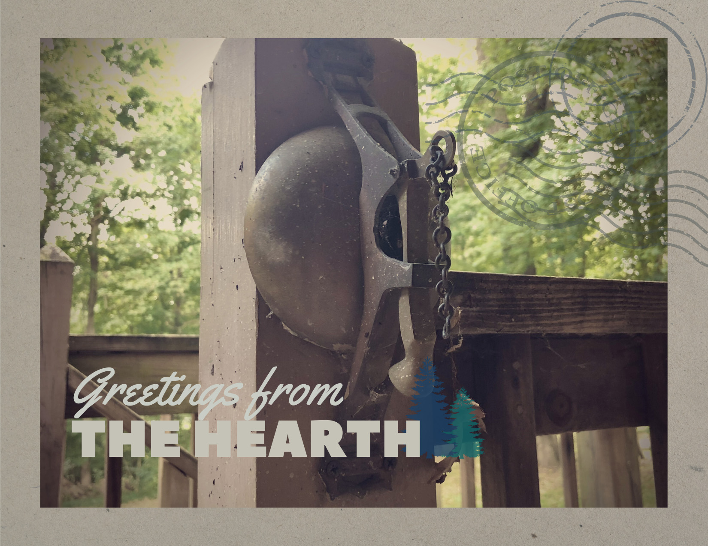
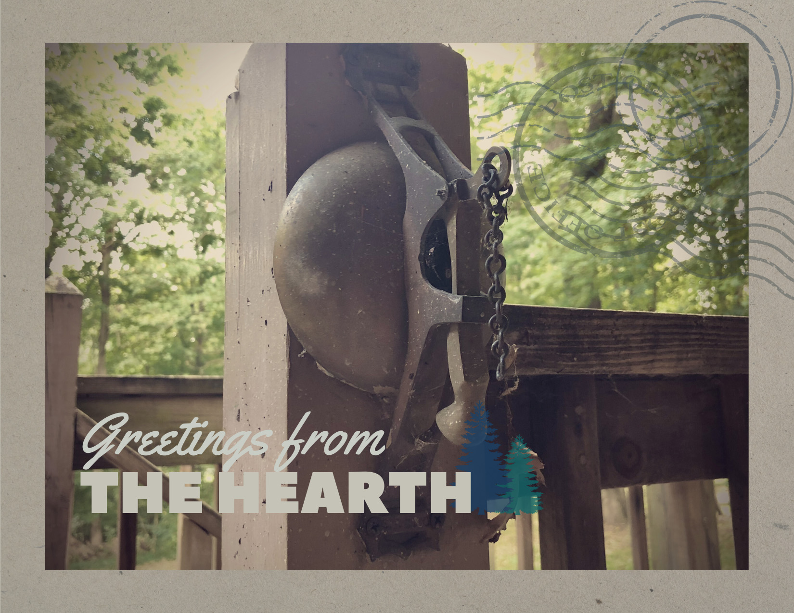

undefined


Explore the desk
A spiraling allegorical poem entitled
is retrieved and assembled by an agency known only as
to preserve, refract and reform its events inside the album
Is a record of music and lyric
that chronicles life, death and after
of a man like a leaf on the wind.
His name is Wild.
- Find them on
- Spotify
- Apple Music
- Bandcamp
- YouTube
October 18, 2024 HORSEANDHOUND
Website by Jan Diehm
01 F I N A L L Y
We bore our red flag, waving,
wrote our muddy hymns as friends -
cast our woe away and reveled in the violence.
Oh, we taught ourselves the language,
burned a fever by the shores
of open prairie,
needing more.
Oh, where, in time, we loved
we bear the callous from the sledge,
and with fists like forest oak, we hoist our axe again.
The drought was our mirage; it razed
the city to the hill
and touched the valley,
deep and still -
Oer the valley -
wandering still.
____
You must be weary;
you must be wary.
So proud to see you
wandered to bury, too;
The auburn prairie,
she longs to take us
when we are ready:
when we are family.
So pace to draw
and face a common friend:
familiar movement,
a foreign Wild in you.
A wind becoming,
she aches to claim us,
though we are steady
when we are family.
And so we raise our End -
flag in face of the frontier
to ward the rest
by what we carry
of what is Holy
in how we sow our ground.
02 R O G U E
When I saw your face,
I saw my face
and turned away;
you stood in place.
Then, I raised my hand to wave
the thought of you away
and touched your face -
see you remain.
Woe begat Be Gone,
became Be Here,
before Behold.
If all your loss turns love,
then lose me here;
let me have here.
- I was a boy in your mind -
You loved his golden laugh,
his marred and married map,
his palindrome in path.
Drove arrows in the clay,
the trail-mark and the blaze,
said riddled with his spade
Remains remain.
Woe begat Be Gone,
became Be Here,
before Be Whole.
If all your loss turns love,
then lose me here;
let me have here.
- I was a boy in your mind -
Crying
or trying
03 T H E M E ( F O R H O M E B O D Y )
Cant seem to recall you anymore -
just light, lilting life, along the forest floor,
grazing the names you keep repeating.
You cry when you write this,
like when you learn
the vine takes the engine and
the mountain earns
those who stand on her shore
awaving -
Oh, have you ever had a Sweet Dream?
One, that you cant imagine: ending -
You wake me up in this sleeper car
and sing to me, still, oer the whistle roar
that sent our last names into their mourning.
I fought you to find me, forgetting who
takes up the ruins,
summoning love to burn like warning..
Oh, have you ever had a Sweet Dream?
One that youre so sure youre believing:
A life anew, while
in new love
that cant wait
for always,
cause always
is someday
waiting.
Though what is too wild
in true love
just cant wait
for always
cause always
is never
living.
So Ill be there waiting to wave you on,
but not alone.
Get going; youve got a way to go.
Oh have you ever been a Dream?
There, there;
there is no There,
and were here; were here -
04 G O L D W A V E
There you were,
pulled me from that wreck,
helped me up to my mind.
Covered then in a gilding sand,
mirrored mountains in might.
We were shaking it from our hair,
watched the valley grow wide,
Saw the smoke rise beyond its depth
as it flooded with light.
Like 31st Street and Long connect
goldenrod paint and pine,
Youll be horses, or on their back;
Ill be naming them Wild.
We were laughing ourselves to tears
every step of the climb,
Saw the passage surrender grip,
caught the wave on the rise -
There you go,
like Im waving, still.
The broken branch at low tide
Holds the lantern upon that hill
where I
held you up to the light.
05 C O L D B E A C H
When you rang the circle we
rode home,
the vines were wild; the kids were gone.
The tires were hot; we laughed a lot.
Held your hand up to the door
you closed
said help yourself, and you let go,
left the light on, like you were home.
I saw you in your mothers house
and cried -
missing, amid who leaves alive.
now who am I? Am I your kind?
You took me to the places you
had grown
and found them places you had gone
and burned alive, scattered your mind.
What love has left in time
divines or divides.
Unite in me in
in harmony
with ghosts, aglow -
Or go, and let go
alone.
Carve another name and, like
a son,
Ill keep the dagger when youre done -
Top of my lungs, return your tongues.
Feel your drum belie your love,
in tons,
the hammer and the damage done,
tracks - turned to run -
deepened as one.
What love has left in time
divines or divides.
Unite in me
in harmony
with ghosts, aglow -
Or go, and let go
alone.
06 A N D T H E N
You took to the desert, and I
looked to the glade in the grove.
- fell asleep in the garden -
Return me to the banks where you dance
and skinny-dip from the camp.
- it was dark; we were lightning -
What now we know
is not the same way as before;
Here, youre the same way as before:
a violet range on your side.
Let the body tend what the body ends;
let the feather land; its like you always said:
Id arrive, like I was always on time.
Do you arrive, like youre always on time?
When skies over mid-city erupt
with bronze and Berylline birds,
we wont cry through the morning.
What a task were given: to love
and call it ending.
Oh, Centennial Park, werent we Something?
What now we know
is not the same way as before;
Here, youre the same way as before:
a violet range on your side.
Let the body tend what the body ends;
let the feather land; its like you always said:
Id arrive, like I was always on time.
Do we arrive, like we were always on time?
Oh, youre always staring down that Bridge;
The same way always pulled me in.
That fires a well, and Ive been wishing.
Oh, you said that you had always been
who pulled the lantern from the limb,
making time while I was killing it.
Oh, you said that Day would always win.
I man the bellows listening
to hear you breathing out and in
and out
and in
again // again // again
07 T A N T O
Where do I go
that you dont
What divine grief,
that only you know,
Leaves cursive curling
in bark like in bone,
Consoling this city
like a headstone
I cant tell it cant stop - if it does.
Oh no I cant stop - when you dont.
Where do I go
that you dont
When does wildfire
regret in its road,
Leave ember ending
and plead for its smoke,
Returning this city
with your birthstone
I cant tell it cant stop - if it does.
Oh no I cant stop - when you dont.
If you kill me in your mind
make sure I die, die -
If you kill me in your mind
make sure I die, die -
Where do I go
that you dont
Pray to find green
in leaves when
theyve turned gold,
Unfurl in whirlwind
and wail in their rows
that covered this city
Where do I go now that you dont
(I cant say it cant stop when you dont)
What, divine grief, now in you
08 B L A C K
Black Dog leapt
even though
his shadow grows
as tall as you do,
shaped you from
the deepest loam,
dreamt you had grown -
your eyes, flecked with rouge,
said, You -
You are
the one I love.
said, You -
You are
for what I hoped.
You are for what I long;
you are for my whole life.
Youre the one I love.
I said, You were
Black Leaves left language
like a rune
on your rose-golden planet and my
blue moon.
Time marches ever on
in dream / in song;
you live when you move
said, You -
You are
the one I love.
said, You -
You are
for what I hoped;
you are for what I long;
you are for my whole life.
Youre the one I love.
I said, You were
biding your time,
biding your time,
biding your time,
biting your tongue
saying goodbye.
09 A ( F R A M E )
Great, Wide, Green, gone in body
are you outside of me?
Gail Force Wave, golden in body
were you the falling leaf?
Sunburning Woods bend my body
like you, a time of me
Take what ran wild in my body
with you, and on from me
When do I fight you in here,
thrash at your silhouette
a roan-soot frontier -
like I heard your bell through the trees,
your call from the timberline,
the end of ending
mirroring me
make offering,
moving as I do to hear:
When do I render your name,
dash oer your mountain lore,
aroar in its reign -
like I find the quarry beneath,
the altar as an altar -
the mesa in me:
You, mirroring me
make offering,
waving like I disappear -
You can take my body,
my blood;
leave me in love.
In body and blood,
dont bite your own tongue - or through it.
You fang in the rough;
your love conquers love - say to it:
The Wild in me hums;
The Wild in me hurts - and knew in it:
the who I become,
with Woe and Begone
will lead the way from here.
When you make way and resound,
the flag stands and we billow
your minds eye from mouth.
Remember us
reaching for us.
Hear me as I do:
Great, Wide, Green, out of body -
in you, a part of me
Gail Force Wave, golden in body,
like you, a part of me
Sunburning Song in my body
of you, (will cry and not hurt)
a part of me
Take what ran wild in my body,
with you (to cry and not hurt)
a part of me
10 O N W A R D
in lore / in love
alive
in word
you bind / you find
a life
inward
relief / in belief
in life
onward
though river runs away,,
the body keeps
so long / in song
alive
in word
leave have / take hold
in life
inward
replete / you greet
a life
onward
though river runs away,,
the body keeps
regain / your reins
alive
in word
we go / let go
in life
inward
and yet / and yes
a life
onward
though river runs away,,
the body keeps its name
11 D R I I F T
Horses read out of your rune,
mansions in your mountain womb.
Half-faced monoliths left
megalithic waves in your dune
and no one to exhume;
green decorates the tomb.
Tidal waves
resurge, reclaim,
and youll hear who you called lost
singing to who you call won.
Revive in wake;
remind; remain.
This is the love that I want;
call me what you want.
Salvaged from valley, embarked,
gathered you safe in my arms.
Tree tops in triplicate wrung epithet
away and apart,
left train cars in the dark.
Who sleeps in forest park?
Tidal waves
resurge, reclaim,
and youll hear who you called lost
singing to who you call won.
Revive in wake;
remind; remain.
This is the love that I want;
call me what you want.
When wild wind has spoken,
when evergreens golden -
Ill wave from the Bridge
and cast in our bellows,
believe youre swimming
through The Valley.
Oh, now wild wind has spoken,
Oh, now evergreens golden:
Go -
12 G O
You loved the scar of my body.
You rowed
the mire in my eye. Oh,
your lips touched my mind for a time,
where you mine.
Time and its governors wildfire
designed a rogue,
lone feather of you
to reside on a sleeper car ride:
now divine.
But how could our suffering know
that all of our love is unending
as daybreak in beckoning:
Go on from here.
Hang the light high from here;
hang the light say, Appear.
Appear.
You spoke the wildflower out of
this tome,
awakened the rail overgrown;
now I know where Im going
and where Im gone.
Now you ride high on my back; we
lift off.
Our feet leave the dirt; now were
soaring The Oak knowing light
comes and goes.
Oh how can we be still and know,
when our Acts of God are their movement
and daybreak is beckoning:
Go on from here.
You have my light, say, Appear.
I have your light and say, Appear.
Appear.
Greener, the time-flooded
valleys of light /
Appear, appear
- and you appear.
Return in might
what was hailed to the light /
Appear, appear,
- and you appear.
Tears mirror mine.
lift your red, sullen eye /
Appear, appear,
- and you appear.
Deepen your stride;
break of day, break the night /
Appear, appear,
- and you appear.
13 T I M E
somewhere fire - entire, in heart,
- in heart -
in hearth, goes hissing to the morning
over time and hill and mile
- and mile -
The Owl, still crying to your calling
now answers to the eaves
your body was framing
what a simple thing
by word, rearranging
the amber, leather leaves
among the heather reeds
tobacco wreathes you were
haunting
like I am haunting
14 C A T C H A N D R E L E A S E
Felt fray in the wring
betray that you meant something
to me.
Your knot ties to me.
You league-deep beacon like
beginning.
The youngest wound is the oldest
holding the hope that I hunt you, repeating.
Forever
Bound together
With your head in your hands like your helping
With my hand on my heart - make it healthy.
You hold the line and its tight
and from the opposite side
I see you now like youre winning.
Oh, what could be thicker than my blood
Oh, that meets The Valley from The Run
Oh, have I been waiting all my life
for all of your love
With your head in your hands like your helping
With my hand on my heart - make it healthy
You hold the line and its tight
and from the opposite side
I see you now like youre winning
when you
release -
15 M A N T R A R E C I T A L
When they make up our map,
our three separate paths
circle back
as they pass.
When we held up our hands, and
their leaves fell through them,
you said youd only look ahead
evermore.
Dont you want to see me / like I need to be seen?
Oh, I dont even feel / the sting / anymore
What had crept up my bed,
my toy-train-track dread,
now retires in my head.
Now they tear down our tacked,
have swept clean our tracks:
no love - or its lack.
Dont you want to see me / like I need to be seen?
- to love like theres no fear
When you run,
make sure you run
with all our banner bared.
I will do
all I can
to deliver you.
We flood this hill;
I feel it still,
the glittered and undamned.
Now we live
in how we live
When the woods are lilac,
and the sun warms your back
and you love what you lack -
Dont you want to see me / like I need to be seen?
- to love in the face of fear
16 S U M M I T
I remember
(Splendor)
your hands around my face
reveal to me my way,
revere the light of day.
Seven winters
entered
pretending not to pray
for those crash of lightning days,
oh, the gale force in your gaze
all the good that gets away
from glades that mar the way
of who in love we stay
I remember
(Splendor)
my Wild Foray In Flame,
its paper lantern panes
that carried up our names.
Neverender,
render
what Night belies to me.
oh, those nights belong in me
from their Summit to their Sea,
and now they call to me,
and now theyre harmony;
theyre now eternally:
this and this and this
17 P R A Y E R
Hail to the /
Wild in our /
Woe in our /
Hope in us
Hail to its /
Welcome / its
Shelter / its
Loneliness
Healed / in its
Wildering, /
Witnessing /
Holiness
Run
Thank the lord of / the endless shores of /
Our birth in love / Our worth in love /
The love weve left to bear
(Let) Otherness /
Brokenness /
Eagerness /
Openness
Carry us /
Maddening the /
Coast torn in /
front of our
Victory /
History /
Ghost-Storied /
Revelry
And run, and run and run
Or pray to your storms / until you beg from under them
Lie, like youre alone / like the mandala never spun
Like you dont know where to run
Like you dont know where to run
Let there be Holy Love / In hands broken open
Thank the lord of / the endless more of
The horse that runs / the setting sun
Through watercolor tears
Reborn in love / reformed in love
To echo through / the years
18 H O L Y
You dont even have to say where;
I will know when,
and we will be Here.
And out of nowhere,
Power is there.
Never turn my back on your dare;
we are a kin;
the rebel is rare.
Ive had the time of my mind
living in kind.
- holy shit -
Now youre in the ends of my hair,
burning my skin -
the light in the air.
Are you missing it,
or just listening?
- holy -
- holy shit -
Making Love the life after death -
are you counting on it
like I am counting on this?
Forgiving my love:
forgetting in love.
Blow the whirlybird from your hand,
and you will begin,
as I do again -
Arriving on time
and ending in time -
Disc 1
01
finally
02
rogue
03
theme (for homebody)
04
goldwave
05
cold beach
06
and then
Disc 2
07
tanto
08
black
09
a (frame)
10
onward
11
driift
12
go
Disc 3
13
time
14
catch and release
15
mantra recital
16
summit
17
prayer
18
holy
Dispatch // Ephemera one
10.18.24
The Forest Park Wildlife Corridor
1
THE FOLLOWING WORDS MARK THE FIRST ENTRY FROM THE CASE FILES OF ASSEMBLED LETTERS, DECIPHERED FROM A CURSIVE SCRAWL ACROSS A TOME OF BUNDLED LEAVES - DISCOVERED BENEATH A GREAT OAK THAT STRANDS THE EDGE OF THE AGENCYS ACRES.
THE TEXTS ENTRY WAS DATED AFTER THE TIME OF ITS REVELATION; EVIDENCE ITS WRITING IS PROGNOSTIC, A FUTURE AWARE OF ITS EVENTUAL DIVINATION, REACHING BACKWARD - LIKE THE TAIL OF ONES OWN SHADOW, TREAD FAR AND AHEAD, WOUND ROUND AND CLOSE ENOUGH TO CATCH.
THE CORRIDOR WILL REPORT ANY FUTURE DISPATCHES ACCORDINGLY, DOCUMENTING ALL PHENOMENA OF SHARED AND INTERMINGLED MEMORY.
- THE FOREST PARK WILDLIFE CORRIDOR
10.18.24
Before Woe, Woebegone and Wild, I grew up in a house that marked the first point along our wooded neighborhoods perimeter loop we called The Circle.
Ours was tucked within its timbered guard, a microcosm, against an acre grove of forest, among forest, atop its country highways hill.
We ran barefoot through those woods and played through the sweet grass sway of summer through the leaf-pile days that bronze.
__
My father and grandfather were men of their texts. Legalistic but genial. Outdoorsmen, hunters.
Back then, my grandparents lived through a rolling holt of trees that separated our houses.
Some nights, Dad would stand on our back porch and sound a bard owls call into the well of the thickets cricket thrum.
A few moments would pass, his notes muffling, lilting through the trees, until the same singsong of tones - my grandfathers owl - echoed back in reply.
A call and a response. That was enough.
2
Theyd hunt, and when I was old enough, I asked to tag along.
-
The majority of our excursions were binocular.
The men would point and share, whispering to or comforting my curiosities.
Playing quiet, playing careful. Crunching through the last of the goldenrod.
Wed dry our clothes in the open air, wouldnt touch the yearlings or break their branches.
Id step in step, exactly where theyd tread.
A leave no trace, quiet observation of the wild.
-
I think they were content to enjoy each other's company, the ochre vistas, blending in to witness what life would lapse before them, unaware.
When the time did come to fire, they were marksmen.
The deer would bound away, though theyd both seem pleased, confident. Wed clamor down from the tree stand to track its leaping flight, following the small dark blots against the graying wheat of dusk.
I remember asking, tearfully, why theyd run, or how. My first encounter with death.
Gently, Dad explained them then as their reflex, that they were already gone, like it was muscle alone. Painless.
Wed find them in serenity and theyd honor every part, but Ive never killed a deer.
-
Dad meant to love me through that moment. Bewildering, sensitive.
But suffering is a power, and its acknowledgment is a first herald of a higher awareness of and for each other, our own lives, outer life and its finitude.
Suffering - that we suffer, that we grieve - is a living rebellion against death, a righteous anger, our grasping for any tenuous hold of our fleeting lives, our desperate love and hunger for it..
It informs all meaning, all ceremony, codifies every metric for joy, shifts every action to being.
Its hard to remember, but I feel I knew his language was protective, even then, and my suspicion of the reality would pain me to quiet tears, haunt me into the softness of sadness.
__
3
Many years and lifetimes away from any hunting trip, a doe appeared in front of me on a slate February hike through Edwin Warner Park.
-
My mom died that October, two years ago, a few months before The Doe touched my path.
Her last years were full of difficulty, surprises; Moms life was complicated, and death befell her in much the same way.
Id worked for several years writing Fang, recording, editing, re-recording, but had a heightened fury through her last summer, her fading fall, trying to finish what I thought was the albums final state, trying to get the record done in time, but didnt meet the finish line before she met her own.
Death isnt the theme here, but it is an inextricable torrent that streaks the breadth of Fangs horizon.
This album is a sanctuary for Life. A save room. A ledge and not the edge.
__
A F I T R lived as a project called Homebody for over a decade.
Part of the earliest conceptualization was unwittingly semi-didactic: a small hope that by surviving my own losses, I might divine an antidote to the supreme introversion to which shed finally succumb.
Homebody, in the projects earliest language, was a malady to expel.
-
After her funeral, I was a man obsessed: throwing myself into another round of edits, waking up early, working after work. The days were dark, and I limped until I laid down.
For the first time since Id started, I stopped. I didnt touch the record until the late spring of the next year when Id record the final version of the song G O.
-
The Doe crossed me that bleak new year and bade me keep my heart broken open.
4
My flit of flame, my fleeting moment, shone across the placid lake of her stare, before she leapt away: silent as the ash that floats the ember.
I remembered, for the first time, the way the white tail bounded - so vividly alive.
In spite of and beyond the point of injury, between the point of diminishing - so vividly alive, so vividly aware of life. Their body. Their time.
Theyd run and theyd run, until they couldnt anymore. Theyd run.
I thought of my Dad and what he called instinct. I thought of reflex, their instinct to move, the response to live, to retaliate by aggressively living: in motion, not in fear.
I reached back to myself as a boy and hoped, with him, that they ran as a last exhaustion of their life force, an exaltation of their force.
To use it up. To use it all up. To come to rest, heartily emptied.
-
If any Great Loss - the end of a relationship, the end of a life, the death of a loved one - is that arrowhead, that point of impact, I want the deer to get away.
I want to be deeply aware of my time, the people I love.
Id known for myself, for the love across of my life, for my mom, I wanted to leave my tracks, but grief has its own way.
Those first few months into grief, I ran the first sprint that mattered, and still fell wide-eyed in the brush.
I didnt turn away, but I did run out of steam.
Along those months, the first year into silence, the animal allegory, within the allegory, finally cauterized, and the trail was clear after the watercolor dried. The deer gets to its feet.
The writing outlasted its mortal wounds; its characters wanted to live, each part of me in them more vividly aware, vividly alive, crawling to run for fear of missing life and not for fear of losing it.
The Doe, the memory, the image, inspired the final stage of writing for this project, and completed, in me, the necessary means to finally realize its expression by writing A D B D, and the subsequent T F P W C visual series.
__
These songs are the trail I leave of my short time here.
5
Some evidence, that while I was here, I felt deeply and longed deeply and loved as much as I could.
What a strange duty, transmuting our feeling, as creators and collaborators along this impossibly vast and bitterly finite survey.
A solemnity, an ecstasy, from every coordinate - were made to share.
From the tomes of these memories, Im tasked now to break and exit what has been a solitary and sacred haven to me, and invite in, again and again. A curator, a caretaker.
-
Ill miss The Before. The Working on these songs, this project.
Its been a true labor of love, a true love of my life, painful and gleeful.
Promoting invitation to Fangs private world is hopefully bereft of any sense of arm-waving as to how it should be important to you, but I do hope to impart to you something thats been deeply important to me.
__
The album A Fang In The Rough follows a sequence of autobiographical and allegorical events through the life, death, and after of a character named Wild.
The characters within the analog experience and translate their own mythologies by their own allegory, a parallel within the record itself. Thats A Deer Between Death.
Before Deer, before Inextricable Hope, these songs were always a vessel to memory. A future for the love(s) of my life, the house our imaginations built.
These are love songs and letting go songs, journeying and growing and dying and retrying, reuniting songs. A way to remember my own life, my own love.
Their study crossed all my relationships, evolving and changing as much as I have, as those eras of love, their power and memory, have repurposed to higher meaning.
Ive been incredibly lucky to love and be loved by the inspirations in these works, and have tried to hold up our stories with reverence and gratitude.
All my love is here.
If we werent meant to make it, we were meant to make this.
And in that, even now, I find hope against my own despair.
-
Fangs been a sanctuary, a friend to me, my company.
6
My own refuge against an elemental waning in relationship, life, and memory.
I wrote half of this in a motorcycle helmet over a million miles, collecting and re-collecting.
The track may coil, but it doesnt end where it begins, celebrating the bittersweet ceremony and survival in scattering, in discard.
Amazingly - all, through it, that Ive let go, I commune closer with now than ever before.
__
TLDR, I wrote an album that thinly veils my own life, and within that album, its characters write an allegory to reconcile their own.
The Corridor transmissions are made as evergreens to revisit upon completion of the record and the story - the latter of which I plan to release before the end of the year.
Because many elements, places and relationships, stories and memories make up this record,
as a title, A F A N G I N T H E R O U G H comes practically.
A fang is just a small remnant, a cosmic bit of shrapnel left from a cycle of life, a shard of survival.
Alone, it's of no singular consequence: its function retired; but in the company of other fallen ephemera, its the forest floor, the woods, a season, its sand: the makeup of wilderness.
A fang in the rough is an echo beyond the detritus, a portal, a totem, memento, a gateway to memory. Cherished.
A revival to the greater Sum of the grisled Part.
A reminder our heights and valleys, too, become part of a larger story, even as we hand them over to a future - that includes our yet-to-be-known selves.
Our greatest losses and greatest loves are our rolling holt. Our strands. Our moldered dams.
As much companions, as are the summit stone and its crumbled mountains shore, its avalanche, its paths that part the sweet grass beneath early night and amber wave:
no step of lesser value or connection in their sequence that delivers us to our joy - to pain to seed to grow to strength to leaf to shade to silt and begin - again.
A call and a response.
Fang is my owl call, from the woods of Forest Park, the name of the road of my childhood home, preserved, alive, like my love, like my mom, in this music forever.
Dispatch // Ephemera two
12.18.24
The Forest Park Wildlife Corridor
1
THE FOLLOWING ESSAY MARKS THE SECOND ENTRY FROM THE PARKS ASSEMBLED LETTERS, DECIPHERED FROM A CURSIVE SCRAWL ACROSS A TOME OF BUNDLED LEAVES - DISCOVERED BENEATH A GREAT OAK THAT STRANDS THE EDGE OF THE AGENCYS ACRES.
THE TEXTS ENTRY CONSTRUCTS AN AMBLING, ANECDOTAL TIMELINE, RECALLING PEAK AND VALLEY ACROSS A SEQUENCE OF LIVES, LOST AND FOUND. THEIR AUTHOR ASSEMBLES A MIRAGE OF IDENTITY, THOUGH ITS MODEST DISFIGURING READS VULNERABLY. TENUOUS.
DISSOLUTION ACCIDENTAL? DECLARATION OF WHAT?
INTERJECTING OWN TIMELINE? SOMETHING LINGERING HERE. HAVE I READ THIS BEFORE? SAID THIS BEFORE? ALMOST LIKE IVE BEEN HERE BEFORE. HANDWRITING FAMILIAR. LIKE A HOME MOVIE, SHOT FROM A DIFFERENT ANGLE. A SERIES IN SERIES.
THE CORRIDOR WILL REPORT ANY FUTURE DISPATCHES ACCORDINGLY, DOCUMENTING ALL PHENOMENA OF SHARED AND INTERMINGLED MEMORY.
- THE FOREST PARK WILDLIFE CORRIDOR
12.18.24
Fangs been inhabitable for two months today.
Releasing it feels entirely surreal. A lucid dream, fading. One Im wrestling how to retell.
Ive wanted to share more about its process, its pedals, but our outer worlds needed love more than ever, and my inner world is good at waiting.
-
Beyond its own story, I feel there's room to preface through its autobiographical, metrical context, too.
This is the first time Im truly able to outwardly wonder at it from its newest angle: shoulder to shoulder with anyone else.
Im enjoying taking intentional time, standing back, beside myself, to thank what my past and I have made.
To thank its loves longing to be here. To remain. To say there was, and there is more.
The albums an outward celebration of that succession: lighting a next bearers torch and inheriting its cumulative shadow play.
2
-
The soft-reveals been unnerving, though predominantly, truly, enlivening.
In some ways, the weight of its great burden - or the great labor of my devotion - feels shared or lifted: a sense that what Ive owed to it feels served.
A promise, fulfilled.
I wrote a letter to the record, or to my future self from it, that you can read via afangintherough.com, or from case study files via The Desk.
__
Fang started as a few progressions. A style in melody. A general tone.
I remember its leitmotif announced itself over a college summer, thumbed out of my old Guild in my moms driveway. Everything different then. Trees creeping in. Humming with a capo on.
I started having fun working it into an oddball batch of new and different-feeling songs: all chord and melody. Id murmur out half-lyrics I called fake words and felt out consonance and vowel shape, trying to find my way and stretch out in the arrangements.
Like working backward and forward. Like trying to plan and then recall a dream.
A few tracks in this precursor era survived their own evolution and eventually formed their own collection.
I thought it was an EP. Maybe its own thing, outside of the music I was playing through undergrad. I called it Homebody.
-
I toured around with bands of best friends and was in and out of love that would work its way into my growing soundtrack to it. It was 2012.
A post-everything combination of accidental pretension, Id studied English and Recording Engineering, taking music and myself woefully seriously:
Enraptured by Tennessee Williams, Ginsberg, Marquez, Cheever, overwhelmed by the endless backward glance, the feeling of catching up to the moment by its heralds that revealed me to my own.
3
A squall of smoke, then. Another fresh essay huddled beneath the perpetual rain within the courtyard of Peck Hall. Maxwell House and campus coffee, regrettably fitted denim. Pacing and pining all the way to Mass Comm.
Myself, a corridor: between my youth and my young adult life, struggling to feel seen and knowing how to see. Errantly slamming the heaviest door, darkening the whole hall.
My grandparents moved to Murf around the same time, and that era of their house in The Boro will always mean Hersheys with Almonds. Jeopardy and early quiet. A hammock between its birdhouse trees. My Geo Metro my friends and I could carry. Some memories I have to myself.
-
Family would pass, my friends and Id move or move out - growing up, growing out. But there was gravity between us and what music we made.
Revolving it, we kept writing - playing college towns and house shows, recording demos in an empty living room on SE Broad, sunburning in the south, drinking till dawn, surviving to keep surviving by the next word, hunting like mad, painfully in love with the craft, in painful awe of what we couldnt know would change, waxing in the fits of its romance like we knew it waned - my dynamo daydream of it now anyway.
When I remember the eyes-closed imprint, the nexus of the college experience, I think of how contagious my communitys momentum felt.
It was physical, amplified, inertia: a potters wheel spun by the passions of my peers, the altruism of so many professors.
That velocity spat us all across the rest of our own lives, and dispersed any sense of myself I found or designed across those years.
Of course, everything changed; every world expanded. My mind felt brand new, over and over: each state of revelation more embarrassed of its last as Id take my first trembling stride from its husk. Like early onset. Rebirthing like amnesia.
Through its striae, I hoped to abandon any pursuit of image as everything drifted, every one of my moons having counted down and let go of whatever moored them to me at the same time, but Homebody remained; its call to me, or my own to it, tethered us to each other. Clinging, clawing for our shared anchor.
All the madness in love folded into my flecks of clay, my workable earth.
I devoted my whole mind to it - much later, unironically becoming what it foremostly sought to dispel.
-
I suffered through those first post-college years by its harmony and movement, hunting what its stand-in lyrics might mean or point to, what the Song and greater movement was intent to reveal, and carried its music for an agonizing amount of time before ever understanding what it meant to show me.
4
__
Those first years, 12 to 15, were all guitar, all vague narrative concepts, thinking of a top-down view of a world and its characters, their conflicts to conquer and how I fit in.
For the first time, I was writing as someone else. At least in name.
There was a train. There was a forest. A closed track I knew my characters spiraled, a heartbrokenness to earn and learn like the siren they followed, like the call of my own hunting, wound round a concentric circle, converging.
I tried to build out their dramas, reflecting my own relationships, my own cycling patterns, self-denial, the repetition of generational traumas, wanting them to break free, romancing the idea that one character would help the other escape a tightening trap, even at the cost of himself or his freedom.
-
Its been a long time since Ive thought of that eras specific view, of that incarnation, its telescoping ambition from a now ancient vista, but the seed can never rest in its own shade.
Its concept developed a device that would survive, but the arc itself would slink into just one of the foothills in the shadow of the records penultimate climb.
As new Love crossed me in life, whatever focus and greater connection I had drawn would change shape and meaning, pivot or fall away as my enthusiasm for loving outgrew my comfort in longing; the spoils over several years of mining would reduce to rubble, after reaching the top of one mountain that revealed a range of greater mountains.
The series of analogous, pivotal events I thought were destined for the story, would condense into a single song, or a single line.
The power of that compression, the palpability, the summoning rites of each word, rife with meaning, grew in me a responsibility to its precision.
All my calculation and metaphor-mining would enrich my writing, though ebb and flow and recede and reform over several foundational and impactful relationships, and completely strand my sense of protagonist as he multiplied across these eras: each new identity, discerned by the mirror held up by his partner. All of this: without a language. Only symbol. Only movement.
The lyric would evade me until I marched the mountain to the ground.
5
__
Self-defense would give way to selflessness and ask that I hold on.
Deep love would deliver me to deeper love and ask that I let it go.
-
A great tree would cleave my childhood home in two in 2015, and the lyrics to F I N A L L Y would happen that December.
Quietly, privately, I recorded them on a laptop into GarageBand in my closet at 5109: the West Nashville house of friends and creators that still stands in our hearts.
That scratch-take demos guitar track is faintly present in the final published track.
-
I spent 16 and 17 writing beyond my ability; my ear demanded more of my playing as its exacting taste defined more of the growing tomes arrangements.
These were the advent of my motorcycle years.
I think of their wing span and cant believe I ever landed:
Reckless. Fun-loving. Saying yes to everything. Hungry. Broke. Bulletproof. Hopeful and drunk, growing. Honest and softer and hiding and harder. Sad and grateful and saying so.
Embarrassed of the presumption of my own appearance of incompletion: a phantom project that couldnt be shared.
Mourning the loss of a great love that had yet to become its great light - all while privately, intermittently, tending to my mothers crises.
My grandfather passed, and my mothers sufferings would take their first medical turns in the fall of 2018.
And despite my defenses, again I fell in love.
I left my job to pack and move my mom and our ghosts from our house in Forest Park, and leap, for the first time, toward music as my primary focus, writing through the winter about music, what its Homebody had grown in me.
I laughed then, haunting my own house. Growing my new ideas on top of old memory, sewing them together by the act of remembering. Holding up the evidence of an old life, after saving it to remember, realizing I was standing in the moment it hoped to ensure. Pressing it to my chest.
I wondered then, if, as a child, Id ever glimpsed myself as a man in those woods, in those hallways, holding a book or a bear, dreaming a dream as real as its feeling, wandering from room to room, remembering.
That dialogue intrigued me, and I found myself interested in who would speak and what theyd say.
6
I wondered how many more ideas of me might wander the halls of someone elses memory.
Some versions, alive: my best moments, surprising lovers, thoughtful comfort, sentimental triumphs.
an unmarked file in an unopened room, a scribble in the dark of a moonless night, a fear paraded as anger, unrivaled then and unwelcome now.
October turned blue, and the new buyers were stripping the time-frozen wallpaper before Id shut the U-haul door.
__
In Nashville, my friends and I would sorrowfully prep to leave 5109 into February 2019.
-
Life by then felt listless. Another Place Memory displaced.
And yet, only after exiting that brave era, I was stricken with a clarity in the projects language, the language itself as the oar and the anchor: the conscious means to reconstruct and re-inhabit memory.
Collaborating with how deeply Id paid attention, paid admittance, to the unconscious words Id already enlisted, I began to chart and call and recall myself to embody them: finally incorporating myself in the writing as its writer.
I remember standing in my open wounds kitchenette the day Id moved everything into storage, wondering what to do next, where to work, when to finally yield to the improbability of the albums actualization, how my new chapter fit into its story - and that it didnt, finally sequenced all my ideas around Homebodys protagonist into its series of successors, meeting and leaving and retrieving himself:
Woe begets.
-
R O G U E and then T H E M E came. Interacting with the lineage, pulling it forward from the clues thrown ahead to me from its past.
I wrote on Monday mornings, coffee with two cats(he/him) and a dog(master/commander), before taking daytrip sojourns that cycled Hidden Lake, the Warners, Beaman and Bells, talking to myself across every trail I could cover and recover.
The rest of the album would somersault me through new work and new strife, one event revealing its next, to its finale the next summer, having learned and disciplined a translation: an open-eyed focus for its story I felt had happened, or continued happening, atop my happening.
7
Living life as it moved forward, while watching a series unfold in reverse, played from its ending to its first episode, re-writing its script from the middle.
The albums greater world amalgamated a variety of preoccupations and honed them, sewed them into its tapestry, drawing everything but the string to its narrators parachute.
If I knew how to bottle whatever that fury was, I wouldve shared and wed have never left the bar.
__
Across loss, Ive found comfort in the sentiment that grief, regaled, is an abundance of love unable to reach its destination, without its place to go. I suspect my grief, by then, spanned a small lifetime of places, people, eras, my inability to return, to rehabilitate, and mourned their inaccessibility for re-entry, to finally evolve into its song.
Who knows. It felt, after all that time, on time. I feel that still.
To bypass a great deal of deep feeling, feast and famine, earth shaping and shattering - I refined and finalized the lyrics, further deepening and understanding the layers of narrative well into 2020.
Id worked out the many echos of the catalyst in writing and called my characters by their names for many years. Names denoted by their own eras, denoted by their focus in love: by who held their mirrors.
It felt I wrote in concert with them, finally allies across time, breaking the pattern of self-severance in the name of survival. Opening my own corridors doors.
More than I couldve known, I would need my strengths, my best selves across love, their acts of love, to reassemble who Id instinctually forgotten before the coming years of new and treacherous terrain.
-
Many guitar pedals later, and after several failed attempts to tap into the sound, the band Id imagined for so long, a first true demo took shape in December of 20 and inspired me toward the next in January 21, and so on - recording sequentially through the album like Id divined its writing.
The last lines Id write for the album, the final stanzas in the bridge to P R A Y E R , finally allowed themselves to me, nearing the end of the summer of 2021.
-
8
Id work around work, taking another giant leap away from a job to finish recording the much-to-be-desired first round of demos, and try beyond might to embolden any means against every madness;
My mother continued to slip down the rungs of her own ladder: its spool, disappearing above and beneath her. Her grip diminished, though her best days still clenched the braid of her children's names.
-
To further abbreviate the dark among the difficult, I clarified and re-tracked the demo state through the Fall and early Winter of 2022 until shortly after my mom died.
Then I left it alone, a little over half of a year.
-
When I finally got back to it, I approached it from the ground up. Making significant changes, entirely re-recording a few songs until I started to see the final state near the end of last year.
New Years Eve of 23 saw me post a sentimental teaser accompanied by the wondrous scale-model work of Devin Drake.
It was real. It got real.
I challenged myself by its accountability, and began to explore the visual execution of what would become The Corridor series outloud:
A Park Ranger style cabin where the interwoven details of the world in each song - sketches, notes and maps, coordinates - would evolve as the evidence of the implied characters study progressed through his exploration: his charting the album, mimicking my own writing, working with and from the past.
Without spoiling parts of the story, that idea evolved and stayed fairly true to form, and it chiefly influenced the second of the three pillars that make Fang complete.
-
After finishing recording, I entered another metamorphic period of deep and holistic isolation, and almost immediately began writing A D E E R B E T W E E N D E A T H in January of 24.
All the years of accumulating, hunting and gathering, collecting and re-collecting and recreating with my own memory, devising Fangs subtextual narrative(s), its critical devices, its finale, its fourth-wall crumbling inextricability, finally took shape as words on paper, like the love in grief overflowing: the internal fabric between the lyric.
With Deer, I felt Id finally realized the vision for Fang Id imagined: The Work that shows the work. The love letter and the lover.
9
T H E F O R E S T P A R K W I L D L I F E C O R R I D O R is its third pillar, that will continue to reveal its design as listeners digest the album, the story, and revisit its visual chapters as another analogue, evergreen counterpart.
__
What began in me as a record, in the sense of preservation, to reconcile my own losses, to attempt to answer what stays, what you keep, what in love remains through its transmutable joys, surprises me, even now, as a gift I hope to understand and receive from my past in my future.
By untangling the knot, unsnarling the animal in the scrawl, I was made able to reassemble my own splintered pane, fit to offer my own mirror to and against my own life, my own world.
Standing on the shoulders of my past selves, Ive gotten to love their love, their hope in hope, again and again, from the groves beyond their graves. And again, every time I sing.
-
Although their narrative identities are refractions of relationship, translating their existence as errant, wandering grief over their destinations dissipation - a love left over, as if it was so tethered - is symptomatic of the malady of self-severance.
The Great Extroversion, defying The Introversion(re: 10.18.24), is the dispelling of that very idea:
Not to defeat grief or its inherent love, but to dismantle its confines, relegated to inactive memory, and celebrate its immutability across every era: one informing and enhancing the next, a cycle of increasing gravity and gratitude, making the deathless spiral an engine, another potters wheel spinning like a top.
The love and lovers of Woe, Woebegone, and Wild unwound, their flecks of clay freckling my mirror: a part of my reflection.
-
Having emphasized the severance in perseverance, Ive had to re-collect my own life.
My triumphs. Details, small and large. Eras, near and far - all memory bleared by exhaustion, vigilance, survival.
Writing restored to me a narrative in loving and reforged a comfort in access and abandon.
-
This record, in combat, has excruciated that suppression of memory, the rolling blackout across time and mind, thats erased me from myself.
By remembering who I have been by how I have loved - bereft of accolade, achievement benign - Ive retraced the map of me: the topography and convergent boundaries of love as important as the subductions I mourn alongside my many failures, my own mistranslations, learning what path delivers me from how many coordinates were drawn in blood.
10
The Generative trailblazing in the creative act has been a direct means of survival, and a result of a thriving I promise myself exists, despite the oppressions of dread and doubt.
Beginning(again) is the antithesis: the antidote to ending.
-
The Great Extroversion is the defiant act of creation; its resistance, its celebration, is a holy, righteous fight against flight, but that hyper-vigilance has taken its great toll.
The characters love, their objects of affection, continue in love, and remain in the album - but I, from them, go forward.
Where they exist in perpetuity, I, in their image, can no longer mine: malleably suspended in the present.
Ive curated and corroborated their stories, but Im no more an active co-creator.
To continue in them as more than their steward would further dilute or mistranslate the honesty in their capture, and so I mourn them, too, to some degree, and must remember the words to my own belief ritual and ask for their company against another chasms roar of silence.
I still listen for their train whistle, and know whos writing this now will join and celebrate their endless wake.
__
The tragicomedy in loving and letting go, is in loves endless, inevitable return - however unknowable the cavalry in its reprise may be, before we offer ourselves to its altar - a majesty transformed through the evolution of the very same loving: a portal that multiplies its company, coming and going.
And so, I feel you, there, a phantom limbs spatial awareness, across time, across our lives, and wave out for entire years by the mineral scent of your makeup, the softness of your cheek, your speech.
Glistening. Snow drift caught in your eyelashes. A glass window fogged beyond our paper coffee cups, a first date in the Village when we dont kiss but imagine your first name and my last name and what wed call our mountain before realizing it slinked beneath a February nights horizon.
If one of us stood still, wedve seen the other streak across and white-hot-tear into nothing.
But we moved together, and the world spun beneath our meteor. Theres an asteroid belt in the snow globe I row, the galaxy of your eyes. I want to wind the lever and play your song again.
11
I want to hang a lazy hand over the archers canoe and graze your comets tail. I want to offer my other hand after burning the first, lapping along the ink of every February night. I want to roar against the nebula of collapsing star. I want to hear your voice echo back.
-
Homebody didnt fit anymore.
I broke the word open, apart, sure. The album had been at home in my body, a body that homed several lifetimes, was my home base, my point of origin, my original body, maybe. I became a recluse, sure. A lot of time at the desk, on a trail. Homebody was a character, an inspiration, a suffering, but it wasnt Homebodys story anymore. Not alone, not by the end. That at least served its original purpose.
-
That everlasting, ongoing conversation across what became A F A N G I N T H E R O U G H is still a great salve, and one, across every departure, in which Ive found solace, but my love for and with and beside you is its final incarnations progenitor star.
Stationary, connection across our most present-tense is painfully vulnerable to misinterpretation - as one or both parties talk backward to ideas that were.
Conversely, by carrying this music as company, I grow with the ideas of these lives and their desires, their highest moments are.
Their memoriam in song is mercurial but housed. Not unlike the life in this writing.
And so, they remain: habitable, vital, conversational, multiplied by the shared idea of them, deeply cherished as a defense against defeat.
To sing - to write or to share - of ourselves is to bridge our whole heart: a library of our own learning, awaiting entry - as long as we build its door and beckon from both sides of its threshold.
A love, alive: transcendental to our relationships with ourselves, across ourselves.
Our sum of many parts that we traverse and embody.
A power we, as creators, must crusade: that honesty, offered to the human arena, is vulnerable to its own transfiguration; that our own memory, and our collective imaginings of love, grows larger in legend: unconfined by our own ideas, unbound by our own time, unrestricted by our own stories - or songs.
Our myth in memory, to be again in its love, is habitable to savor and summon.
Across that eternity, we traverse and embody our many selves, and The Extroversion heralds entry and living re-entry to the love across our many minds.
12
__
Fang borrowed its name from a line in the song A (F R A M E), after a brief stint of semi-final demos I exported as F O N D E R. Absence making the heart grow, etcetera.
As lyric-specific nod is still exciting to me. The character Wild directly addresses me, my writing, and turns outward from his spiral, its writing, saying come get me, and Youre next. and You too, in time.
His physical turn bewildered and invigorated and humbled and spurred me. This was the mountaintop asking to be left alone. Leave me here. You go; I stay.
-
From their beginnings to their autonomies, these were songs I needed.
To hear and speak and sing to myself. With myself.
To learn to say to my future: You go; I stay.
Letting them go has hurt me in ways I knew it would and in some ways Id hoped it wouldnt, but they welcome me today in new and wildering ways - with fixed, and living language. Imperfect and alive. Come back. Dont forget to write.
Funny the courtship, execution and delivery of Fang has spanned so much time and already feels so far away, that even today, as bittersweet as it is, Im baffled to find myself in it: hunting and finding another new light, another refuge, another defense against despair.
To make something like this came from a need to move past and through it, to deliver it, to be delivered from it, to mend and move its mountain, to climb and interpret and give it away, to relinquish as many minds as many times as there are ways to divine and discover and rediscover the summit,
to howl as it spirals beneath us, as soon as were determined to hoist up the next better view
to wholl soon arrive to meet it,
to tilt our shards of candle, our uniquely freckled panes, that catch the angle of our moment, the borrowed light of our suns, all our blinking reflections glittering back to us, following our vanishing meteor, our blistering arc across a vanishing life,
to ask and answer what we were,
to hold you up, to write you down.
Classified
The Forest Park Wildlife Cooridor
Multimodal Visual Debrief 1
Classified
Visual Treatment - Exclusively Read Upon Completion of AFITR & ADBD
The Desk waits inside The Drawing Room: A boundless space, host to documents that litter a central, warping work table.
Artifacts from the world within a written work entitled A DEER BETWEEN DEATH and documents recovered from its parallel aural environs - a series of ambient distress signals categorized under the file name A FANG IN THE ROUGH - populate its surface. Its steward is never present on screen, though his evidence suggests his study.
In each sequence, Camera sails toward a focal, chapter-integral totem.
A worn, manila file folder is added to each new scene.
Within each file are paper-clipped photographs, sketches, and the entrys Lore and Lyric lay bare. Penciled notes and underscores mar their text.
Camera cuts, to the sound of a View Master, and hovers over The Desks recurring foundational items: a tape machine that plays chapter-graduating recorded entries, a typewriter as an implicit medium to the collected reports and writings, and an old radio through which we hear sample, as emissary, of the counterpoint song - portrayed as ambiance in a separate, static capture that serves a secondary moment to each post in motion.
Beyond the addition of each core item and chapter file, maps and letters amass across the desk, multiplied upon each new entry.
Across the first two arcs, leaves slowly, subtly collect until green vine begins to reclaim and cover the desk.
The metered nature of the collected study grows hungry, manic, made evident in its gradual disarray, and follows, to absence, escape, or abandon, alongside the vines reclamation timeline.
These events coincide with Wilds conclusion in the Lore; after which, we return to find the desk with a markedly ordered, methodical level of design: straight stacks, columned rows and catalogs, chair returned upright, seals and stamps under the care of the seminal FOREST PARK WILDLIFE CORRIDOR.
Each sequence is intercut with a representative natural scene, escaping the Drawing Room, alluding to the summoning power of the written word.
The Forest Park Wildlife Cooridor
Multimodal Visual Debrief 2
The Desk, and The Drawing Room itself, is first discovered in ADBD by Wild in its Cold Beach sequence. Its revealed after the assimilation event in Go that all prior events have been relived by reading from The Desk, delivering a written past as a practical act of summoning.
The Trail, or Corridor, is discerned, understood and assembled in sequence by its own timelines future: designed in hope to interlink, to knot.
The author, like his allegorical mirrors, is a fracture, one of as many meanings to his mountain as there are routes to climb - until by reading, he resumes and inhabits the propagation of his own storys cohesion, recreating in concert with his forfeitures, and inadvertent preservation, of the past - writing.
a.) Woe begins to structure a cycle, inherited by witness, of self-severance in the name of its survival.
b.) Woebegone, a gear, a forward-cast clue, unwittingly repeats the cycle, forgetting himself again in penitent escapism.
c.) Wilds arc sees him suffer, experience and irrefutably discover his narrators convolution, catching his own tail. He faces outward, onward to his writer, standing at cliffs edge, a period at the end of the lineage of revolving nomenclature.
One ushering salvation to the other, Wild suspends himself in his own allegory, awaiting the writer to reconvene: by crossing trauma in Life to unearth and recover the series of neglected fragments of himself in Lore before re-inhabiting it.
Life sees the disappearance of life, love, place and person, and in the attempt to preserve re-admittance to memory, the writer collects himself, his charted remnants, to cradle the ephemeral. The net of binding tie must attach its loose end, or the parachute fails.
The Man, the author, who sits behind The Desk, alongside his middle distance, his allegory, retrieves his deepest past by nurturing its re-telling, rewinding the unspooled kite by its cord.
The Forest Park Wildlife Cooridor
Multimodal Visual Debrief 3
The Drawing Room is a Port, The Station, and From The Desk, The Man entwines both ends of the coiled track, between the The Boy and his kite and The Parachute with Woe - one signaled for rescue, the other heeding its call.
From Woe to Wild and The Mare to The Stag, The Boys characters are all designed to rescue him, all imagined in broader, stronger ways, all forecast as a means to salvage himself, through semblance or severance.
The Man is made to shepherd the dreams of his sleeping animal: a wounded, but lasting warden.
As The Stag survives The Arrow, The Man survives the sufferings of the Boy, and, through their tempering, divines the strength to carry himself (as The Fawn) to safety.
_A Final Act
By converging these points inside the narrative coil, TFPWC emancipates all its characters to and from its author, finally able to leave The Desk, The Drawing Room, and the fells of Forest Park with its conservation concluded.
Disc IIIs chapter iterations in ADBD are condensed in numeral to their representatives in AFITR, though their sequential heirlooms appear and remain as pivotal on-screen distinctions in the FPWC visual sequence.
On The Desk, as in ADBD, the visual series ends with the open pages wafting in the breeze, welcoming entry and escape.
In both ADBD and AFITR, collateral images include several locational and relational reimaginings, though the narrative devices of both trees are practical and autobiographical.
An Oak stands warden to the home and hall atop the hills of Forest Park in Life, and in 2015 a Sycamore cleaved The Great Room in two.
The animals allegory within the nomenclature overarch, is analogous to the act of writing allegory et al; Sketches and imagery of the wildlife pervade The Drawing Room, because the characters within its Lore experience the mythology of their own.
Their wildlife counterpoints are distal deities, just as The Man crafts division and divinity between eras of his dissociated pasts.
The Forest Park Wildlife Cooridor
Multimodal Visual Debrief 4
_Mediums of Study are explicit as follows:
A Deer Between Death - A Written Narrative Chronicle
A Fang In The Rough - An Album of Music and Lyric
The Forest Park Wildlife Corridor - A Serial Visual Immersion
_Fractal Reading/Listening/Viewing
1) A first, topical read/listen is romantic, relational: an experiential evolution of life surviving loss, the transmutable creation of echo, reflection upon reflection, its transitory and gilding reverence, growing self-reliance through self-forgiveness and expression, and the everlasting quality of what is gone by what is remembered.
2) A second read allows the lyric its language: the allegorical lore refracted as observed phenomena through magical-realism. This read allows all identities within the Forest Park Wildlife Corridor to indefinitely exist, cohabit and pass the candle from one ideation to its next imagination. The construct of TFPWC exists as the most current host timeline to the writer of AFITR.
Upon exiting the topography of the written lores spiral, (yet)Another Wild, beyond the distinction of titular distinctions, returns to The Drawing Room:
A quasi-liminal space between the allegorys ache and The Great Room of Forest Park Rd., through which he, under the agency of TFPWC, assembles his identities across love and time and deciphers a means to mend and rescue the center seat of their oldest wound.
3) The third hybridizes the aforementioned, with a focus on the loss of life by way of a malady known as Homebody, and was the initial inspiration for all works preceding the broad works actualization. Reflecting on the internal divergence of the maternal character and the didactic mis-navigation of her withstanding, avoiding and identifying as injury, this read serves as a chronicle of suffering into social silence and its exacerbation of introversion to the point of death.
By the author completing these works to extroversion, before death, their exposition served as a map in exaltation, reunification, as a means to escape Homebodys furrow and rehabilitate from its malignancy while living.
After death, they serve that same purpose.
The Forest Park Wildlife Cooridor
Multimodal Visual Debrief 5
The Desk is a proximal anchor that centralizes all points of the narrative by relation to their distance in time across the plots of its map, and illustrates that Craft is core to the experience of love, knowledge and eternity.
The Desk itself was built by my father, a first lifes dining room table. The photos are my mothers minds eye.
The dagger, my fathers fathers.
The typewriter, my mothers mothers.
The tape machine, my mothers fathers.
The lamp, a gift from a lover.
The sound and the word are by hand, ear and eye.
 
 Log Excerpt 1
The staggered one wears a ragged cloak:
its blood raw canvas
torn from the abandoned parachute,
wrung from the ruins
of its tree.
His name is Woe.
In the maelstrom, the two are its center.
The whip constricts
and engulfs the wounded Woe,
twisting his shroud.
Expanding. Tightening.
Wrapping the darkening fabric around his form
as violent as the wind.
Light as a veil now,
though as permanent to him
as marble is the pall.
The weeping partner falls to his knees.
His name is Woebegone.
CH1 - finally
1
From a dueling distance, two silhouettes stand atop a boundless surf of windswept grain.
Acres beyond them, a lone tree looms. Emergent from the ochre and amber. A host to remnants of an ancient camp, canopied in part by the tatters of a canvas parachute.
The Last Of The Great Strand stoops low. A century of gale force has reimagined its boughs, craning its limbs like a herd of horses loping to water. A mirage above the wheaten foothills.
Deeper still, a great, mauve mountain lords above its gold and greening valleys.
__
Every movement the sundown shape begins, the daybreaks shadow creates and ends.
A perfect mimicry, as primal as bow and blade, they dash and dare to untangle themselves from the other.
-
The figures challenge ever nearer; their cloth writhes and snaps in the wind; they lunge to clash and crash again. They spar and sweat and damn their doubt.
Their flits of flame exhaust an inextricable mirroring, until the combat in their angular, antithetical movements finally slows into the languid dance of lovers, tired brothers, as velveteen as trusting sleep.
A hand meets its own hand.
And, finally - a disparate movement alters their every eon, and the two embrace.
__
The figures heads find stillness on each others shoulder, a small defiance to the howling tempest that commands their glade.
CH1 - finally
2
Circling them, they are dancers, ever-turning, beneath a tumult of leaves, enshrined within their momentary globe.
One is quietly weeping; the other sighs, a pained smile across his face.
A relief.
-
The smiling figure winces and pulls the weepers trembling hand closer, deeper into himself.
The weeping partner lifts his head in despair.
His hand, wrung by his partners, clenches the hilt of a dagger, sunken into his opposite at the moment of their union.
Willing, guiding the blow, the smiling partner finally releases the weeping students hand, along with his blade.
-
The wind is unbearable, shaking their weakening bodies, yet they relent.
The staggered one wears a ragged cloak, its blood raw canvas torn from the abandoned parachute, wrung from the ruins of its tree.
His name was Woe.
__
In the maelstrom, the two are its center.
The whip constricts and engulfs the wounded Woe, twisting his shroud. Expanding. Tightening. Wrapping the darkening fabric around his form - violent as the wind.
Light as a veil now, though as permanent to him as marble is the pall.
The weeping partner falls to his knees.
His name is Woebegone.
CH1 - finally
3
He cries out, reaching for Woe as the smiling dancer, now serene, is swallowed away in the fury, fraying apart like the shrapnel of his dressings.
The weeping boy lunges forward and wrenches a length of cloth from the storm,
and with his grip, the wind subsides.
-
He collapses backward, fighting nothing.
Alone. Golden glades, ripped asunder.
His fists hammer the ground, though no one answers.
__
Lifetimes pass until a mournful whistle wakes him from his frozen wrath - a siren bellowing out from the low, forested hills that sleep beneath the mountain.
It rends their leaf from limb and ripples outward: a placid spring woken by fissuring stone.
-
He ties a ribbon length of Woes cloth around his arm, and with another, binds a way-marker blaze.
A carmine mark, a shape like the range, mars the fiber-bare braid.
He stacks a final cairn beneath the stake of their golden hill, among whose shadows he can never return.
CH2 - rogue
1
Woebegones days descend the shivering greenwood; his nights make brave his seeking.
Beguiled by a lilting smoke that sinks to thread the drying, crashing tides of crown shy leaves, he hunts its fodder - never finding its fire.
The ache of iron, a summoning roar, evades and entices his tireless stride.
-
He races under blue black night, tracing range from ridge, hunting the origin of its echo, divining who might command such a sound.
Over time, the siren song of its thunderous clang retires to legend, reduces to murmur.
A low, somber drone fills the hills, bellowing from far and away. His ears perk to the sound, but his eyes remain closed. Fooled before, he listens for the sound, wracking against the chasms of the valley. Far and away. Circling.
It yawns through the forest like a years-long draw of the final breath of a dying animal.
__
His body wains through the ineffable hunt, and in his jade, he stumbles headlong over an unforgiving iron rail.
Red clay rust and splintered planks pitch like collapsing stairway as far as he can see into the spiraling hollow.
A train. A track.
He howls in delight.
The pain of the rail is evidence enough. Closer, in belief, if not proximity. It was enough.
Their irons thrum, though he feels the ancient hum a lifetime behind him at his journeys opposite.
CH2 - rogue
2
Again, he begins, and wills his stinging body in desperate pursuit, as if he himself were being pursued.
He laughs the thought to no one, though looks over his shoulder as the days grow darker.
-
Gradually, that very doubt ensnares him, though a homesickness plagues and spurs him from beneath the anchor weight of its uncertainty.
He pains for the sanctuary of the Old Oak, the anchored center of the drafting compass upon whose free arm hed swung like the hands of a clock, chiming like the softening toll as it reverses noon and north.
-
Light years roamed in sleepless searching defeat his nerve, demand his surrender.
His own engine, slowing. His own song, silent.
He comes to rest, and with his hands clears a humble swath of forest floor of its debris.
The same length of railway lay beneath.
A circle: a coil, closed.
The ancient moan emanates from the direction of his last camp. He glides a hand along the bark of a gnarled tree, and its moss agrees.
-
He weeps. Blanketed under creeping vine beneath the shroud of starless night, his cloak waving in the biting wind - like the flagged blaze driven into the earth so long ago.
He wonders how far from it hes roamed.
He wonders who, as he has hunted, is hunting him.
CH2 - rogue
3
Woebegone dreams a fevered dream: himself as a boy, a man in his shape heralding him from the banks of an emerald mountain shore.
He reaches out for embrace, but the horizon wrinkles as he collides with the surface of a mint and meerschaum loch.
__
Upon impact, a colossal bell tolls and shakes him awake. The surface tension of the lake in dream, returns him to the night, the bracts and branches, the bell-hammer striking the very center of his heart.
He scrambles in the leaves.
A deep huff like a phantom bulls escapes a train engine aching to a halt before him.
Its tempered gleam is shrouded by the billowing mantle curled out of its steaming breath.
The hunted manes of its hull groan in the damp, finally, at rest.
__
Woebegone calls out to a driver as the smoldering rail-pilot cools to a still singeing indigo.
From his chest, his voice erupts as polyphony: at once, small and suffering, then duplicated, harmonized - a hardened, commanding voice, not devoid of comfort.
There is no reply.
-
The engine cabin waits, unbolted, unfurling to him.
Its chamber smells of oil and ink and cedar. He inhales and relishes its alchemy like the wafted pages of an old paper book.
There are no cars. There is no conductor.
CH2 - rogue
4
Woebegone places a hand on the wooden regulator and gazes into the night.
The longer he stares, a kaleidoscopic deluge of hope and memory lay translucid over his vision, a multitude of happening, still happening.
Shapes of family, ghosts of friends, the light of lovers.
Their moments, like heirlooms, raise altars, fill full lengths of sleeper cars, libraries now to thought and time - himself their collector.
Another is grown in his trailing procession at every backward glance.
-
The illusion of movement settles him, relaxes him.
He sighs a bellowing sigh and the fortressing grove trembles above the tectonic wake.
He furrows the machine by thought beyond gesture, motionless beside the subtle wince and tightened grip when the might of the boar whistle blows - only sounding when his thoughts return to Woe.
There is no measure of his tenure here.
__
Intrinsic to the vessel, he feels the lurch of new weight, car lengths in tow, announce hes no longer alone.
His eyes remain fixed ever forward, fathoming the nocturne trench like his rope and his rail spool otherwise and onward.
He no longer dares escape, nor deigns its discovery.
He circles, ringing the ghostly toll: a penny-whistle against the blackhole roar of darkness, and codes a final design, like caution, in its punctuating tones.
A tear rolls halfway down his stony cheek and petrifies like the hand at the helm.
His smoke plumes into star; the flare once fired for rescue, he issues now as tenuous warning.
CH3 - theme(forhomebody)
1
The cabin cars are warm, adorned with familiar ornaments and fixtures, mementos, totems in meaning.
A man, weather-wisened in youth, approaches, indifferent to the hallowed tomes.
His eyes are young and gold-speckled gray, with something evergreen in the distance of their gaze.
He runs a time-tempered hand along the spines of tattered logs, epitaphs to precious loves, and straightens them in row with their neighboring diaries, leaving them closed.
He is singing, a baritone crackling like forest fire in the pollen haze of morning dew, though frost is gathering from the night beyond the passenger panes.
The wintering rock face cleaved by the railway illuminates beyond the careening precipice, white beneath an electric lash that suspends the snow of midnight outside the glow of the coach.
The floor beams of the railcars splinter beneath his footfall: to him, a weightless waltz through their mausoleums.
__
He halts his graceless sashay through the length of the car nearest the engine cabin and allows himself to linger on a photograph, enshrined above the smoldering carriage hearth; its coals are the only light along the infinite hallway of the rail.
A tear escapes him and plummets to the floor, eating through the ornate carpet, molten through the oaken stain, and burning through iron to the endless rungs of blurring track exposed like frames of film beneath.
The green summit in his eye is torched earth in a flash, and he moves through the final gate to bend, undeterred by the biting whorl that whips him numb as the train spirals around the serpentine escarpment.
CH3 - theme(forhomebody)
2
An unruly mane writhes beneath the faded cape thrashing around him as he uncouples the funerary cars from the engine, their afterglow disappearing behind him in the cloak of icy night.
His name is Wild.
__
He wrests open the minted bronze of the locomotives final vault and climbs inside its dark cabin.
His living body steams in the damp stillness of the entombed.
-
A driver stands, a silhouette before the stave of his shield, silent in the trance of the rhythmic hum of the beast he helms.
Wilds voice rings out to who pilots the train, though its captain never turns to face his new passenger.
The faded ribbons of an old cloth are tied around the arm of whose hand rests on the wheel.
-
Wild again sounds out in the darkness. He calls to reason. He cries for purpose: his path, like his conscience, heavy laden by its very erasure.
The silhouette retains his forward gaze, though he begins a slow and indistinguishable litany.
His speech becomes rapid, maddened, articulate. He remembers aloud the love Wild denied through the long procession of his collection.
CH3 - theme(forhomebody)
3
Wild moves closer to the young conductor through his wide-eyed canticle to finally lay his calloused hand on Woebegones adamantine shoulder.
-
At the touch, they share a vision: a windswept collision atop the slab of massif, its ascent by tumult and time tread long after the prismatic crash of their engines eternal plow, great rain and greater storm, the vestiges of dream, the beleaguered ache of bygone love, the hope for the end of its revolution.
How long theyd been each others, been brothers, companions across time, neither of them could know.
-
Woebegones stare softens, and his body creaks to face the traveler.
He remembers the mans voice as a counterpoint to his own, calling out before boarding the train.
-
Wild points to Woebegones side, though the marbled man shields his flank with the last of his instinct.
Against time and temperance, Wild takes Woebegones free hand and guides it to graze the same wound in his own side.
Tears roll, undamned, down Woebegones statued face.
He sees in Wild the same serenity that warmed Woes final glance, and breaks his rooted hand from the bow.
CH3 - theme(forhomebody)
4
Atrophied by his charge, he stumbles, though Wilds strength measures Woebegones weakness step for step; he cradles him to rest, like a grown son and ailing sire.
Above the hum of the railcar, they imagine aloud what must be done, what shores they greet at dawn, and laugh and cry to morning.
__
Light invades the cabin for the first time.
-
Gone are the whir and the thrum, the hiss of steel and rail, the infernal drumming of the tour - exhausted by their arrival.
-
They speak united. Their movements are near-synchronous beneath the cleansing, steady wash of heavy rain: distant applause against the armor of the tract.
Woebegone unties the precious cloth wound round his arm. He drapes it over Wilds shoulders and secures a loose kerchief knot.
They nod and force the hulking doors wide, revealing the patina streaked exterior of the train, overtaken by vine and verdant growth - its been stationary for years.
-
The incredible tonnage appears as grown from the bluff as it does sunken into its scar.
Aside from the sundew-sprawling remains of its upturned track, there is no evidence of it ever having moved at all.
Woebegone peers over the ledge of the tilted engine; from their hairpin vista, a deep ravine cuts far below.
CH3 - theme(forhomebody)
5
He shivers beneath the slowing rain.
His scar is gone.
Woebegone balances on the curled metal ledge of the upheaval as Wild steadies him with both hands; clouds break to dapple the crystalline, waking green in the glittering, vanishing rime.
He turns to Wild.
__
Woebegone offers himself, arms wide to the wind and falls backward.
Translucent in the gale, then weightless into light.
His last tear lingers, suspended before dissolving in the brilliance of day, sweetening the honeysuckles that wire through the cliffs empty cars.
CH4 - goldwave
1
There is a roan horse in a smoldering valley field, with a grey snout held to the white sky above it;
There is no fear in the feast of the fire in its eye,
as it knows it wont go hungry
when there is so much
left to see.
It waits, asking Wild where he means to go.
__
In the shadow of the bluff that still harbors the old wreck, a cerulean dusk bathes their camp in an early springs still cool meadow.
Just as interned as the locomotives rubble, a mare has grazed the hallowed grounds since its scored orchard rows were only loam.
Wild tends her care, just as she minds his. He soon cant remember a time amassed before her charge; she is a constant guardian.
They sleep, sore, beneath the threat of the summit range, another century away.
Together, they survey the great length of Wound across its country, making maps of the shifting maw, charting dam and danger.
The cartography of its sorrow drives him as they wander.
The wind has never stopped howling.
__
From atop his mesas, he thumbs one tie end of his fraying cowls knot, abrading the fabric between his fingers.
He shouts into the open canyon to name an earthwork glade, separating himself from it in body and time, then sketches a severing mark across the legend of his rough hewn map.
CH4 - goldwave
2
What bade him board the phantom train and take up the path of oblivion, he wrestles now to reach.
Another loss to erasure, a preservation of self by its denial.
-
He and the mare retrace the glint and gleam of the earth-bedded track to see it had been, despite his betrayal of its memory, slowly forgetting himself in the legend of its roar.
He laughs to the mare, though she ignores his gentle spur.
With a muddy smear across his leather-soft scrolls, whole valleys submit to flood;
there is nothing salvaged before their siege.
The map is his new mirror.
_
They traverse a thousand setting suns.
The mare adjusts their direction without instruction when she hears him quietly weep in a voice unlike his own.
He mourns another territory he discovers theyve retread - another loss, a love to forget: returned to only wilderness, where name is just terrain.
__
A grand and shifting court tries their expedition; a jury of trees grows so tall theres only canopy above their lonesome cavalry.
They shelter another night beneath the current of its leafing, and Wild stirs, wrestling another fevered vision.
Woebegones dagger lay beside him.
-
CH4 - goldwave
3
Between dreams, Wild is tempted by a backward glance: an abominable trespass of his sacral law.
He hears the wind like a womans voice, lilting high atop the bluff, her simple melody reverberant through its steep cascades.
Gently, he rises without waking the mare. She sighs, unbothered by the melody.
__
He climbs, driving the dagger up the slope, and carefully approaches the sleeping megalith.
He lodges the blade between its felled cabin doors.
A foreign sigh escapes him, and hes invaded by a memory : an inaudible word he couldnt reach in Woebegones final breath.
-
The earth around the damned car has shifted in its lurch; to enter meant lowering into the cabin after cutting away heavy rot, root and thorn.
He brandishes the blade and hangs motionless above the dank and empty tomb, peering into a crevice of endless cavern, boring deep from inside the crushed wheelhouse, fissuring into the mountain core.
His eyes travel the spiraled shell of its stair - the trip awakens in him visions of a life before. A boy in love. A boy alone.
An unreachable loneliness hollows in him.
The deep aches sears beneath his ribs, a splinter to remove.
-
His eyes scale and reflect a world beneath the rule of a remorseless moon, pale in its infinite night.
CH4 - goldwave
4
The mare bucks and whinnies from the camp below, her full gallop in time with the drum in Wilds chest.
-
Slowly, the machinations of the operating panel begin to rotate in the crypt.
The natural world creeps back in retreat.
The mares closer, urgent whinnying never wakes him from his stupor.
The melody that drew him hillside is mangled in the droning stormcry wracking the upturned catacomb.
What vine remains takes the fleeting form of two hands that cup and bid him drink. More slink around his feet. Their barbs snag his clothes; they climb to graze his cheek.
A hail of falling rock pelts the exposed metal as the whole of the pass of crag swells like treacherous surf beneath him and the husk of the train engine.
Crouched above the heaving iron, he balances on the wrenching wave, eyes transfixed by the gravity inside the car.
The train engine aches as its expelled upright, swelling out of the hill, to teeter the ledge of the mountain coiled track.
-
Wild steadies as it rolls him into the small of its clutch, his arms instinctively outstretched.
For a frozen moment, there is no breeze. Something wrong, elucidating his surreality.
He pulls against the vines to reach the knot of his cloak and finds it isnt there. He whips to face the open air, and thorns drag the backs of his hands.
Riddled by their true pain, he wrings their blood and blinks to shake the world hes dreamt, but sees and feels its terror remains; its promontory quakes beneath him.
The ledge fractures under the car as punishing rockfall crashes into the depths below.
CH4 - goldwave
5
__
A blazing wave of leaves, as dense as sand, sears through the night like a search lamp, illuminating the facade as it rounds its pass.
Its tunneling bends the air; light lingers in its furrow, unbound by the path.
The nebulous swarm surrounds and floods the engine to the squeal and ache of metal, the roar of squall.
The amber reveals the umbre, burning back its tethers. Sap gurgling, vein writhing.
-
Wild, sensory, dives forward as the trains consumed in the tempest, covering his eyes from the whipping pine needles torn from the ground.
Gold. Sound and color.
The force erupts from the cabin and barrels into him, snorting and blowing.
The crush of its controlled storm explodes like galaxies of obliterated marigold, evergreen and spindle, ochre and red leather leaves - a wave unbound by shore.
Wild gropes for substance as the shape carries him from the train.
It winds its fury down the pass, leaving a wake of ember. A smoldering, glowing hiss.
He finally wraps his arms around the strong, familiar neck of the mare.
She snorts again as he grips the billowing canvas she bites like bit and bridle.
Her muscular form, now barely shape, twists like flitting bonfire flame.
He chances a final glance amid the rustling roar of leaves and hears the animal groan of the train engine bending free of the bluff.
It crumbles down the crag, stripping metal, rending tree.
Crashing deep into the rolling canal, it comes again to rest.
Its iron plow, a diverging ford, crests the swirling waters of the wide green river below.
Wild buries his head in the fury of the mare; she cries and barrels through the crumbling bedlam, headlong into the dawn.
__
CH4 - goldwave
6
Time passes, though the mare retains her new forms peculiarity.
A thousand-prints-a-moment are imagined across her ever shifting sculpture, a dream reshaping its papier-mch.
-
What arrived as an infinite gust of frond and flag spreads now like watercolor, splattering the new world beneath them as they trod.
Years pass and Wild sees himself employ the same quality.
The fields of fire that once trailed his wake, are honeyed boons of wild flowers: a living cavalcade to mark his consequence.
-
He finds himself improved: a deepened stride, a higher bound and longer leap, able to swim greater distances against faster rapids.
They tread a barren earth to summon new terrain:
To rediscover, to recreate what pioneering hed washed away.
Together, they imagine new climbs.
She is another new mirror, though her reflection moves a step-ahead in time.
__
Across their voyage, they ebb and answer, though the mares excursions grow longer by day and distance.
They share a mind, and Wild does not worry.
His touch alone now leaves its own animate palette, and he soon cannot distinguish between what of the world shes repaired and that of it hes recurred.
CH4 - goldwave
7
Into dusk, he whistles across a fluttering valley of whispering grain until she returns, though blighted by a darkening hue.
The wound heralds the great tide of an impending storm, whose gathering clouds encroach from a black horizon.
Wild blows on the deep shade, like a burn, like a bellow.
-
They make for higher ground over several days of riding, galloping toward the phantom tor.
Native valleys succumb to the tempest flood, though the two cannot relent, piercing the darkening days with their sunrise light.
-
Winding, climbing, they resist, though the dark imposes. Their lamp blinking like a candle in the bottom of a well.
At the edge of night, Wild sleeps against the mares back, as the two rest in the face a cavernous impasse.
The remnant of a braided bridge swings pitifully across the gap.
__
From a forested vista, they watch the rain pummel the rockface as the roar of the white water rages ever nearer their camp. The mare is silent, though Wild follows her eyes toward the Summit, eras away in the distance.
With his hand, he wicks a flame from her mane and, from his palm, floats its whirling glow into a glass chambered lantern.
He climbs to hang it from a gnarled branch of a tremendous oak that reaches out for the opposite, torrented bank.
CH4 - goldwave
8
-
In a whip-crack of lightning, he catches sight of a ledge he knows her bound alone can reach as the lesser trees give way to the flood.
He returns to their vanishing ground.
The mare presses her head against him and heaves a warm and heavy sigh.
She drops the dried-canvas kerchief in Wilds hands, and, with it, he gently snaps her back leg, spurring her jump to the landing above the emerald waves.
-
They watch each other, torn across the cascading battery - two figures, alight, fleeting in the dark of the mountain pass.
-
Wild clings to the Lantern Tree, but the freshet engulfs him.
The mare squeals and cries, stomping her flaming leaves.
Hes dragged into the breadth of the ravine though catches a final hold:
something familiar, a way marker, driven into the shifted mountain scape.
Someone elses ground.
-
The storm is merciless, and the swelling tide rends him from his anchor.
Like his grip, the mares shape is lost. She erupts with a thunderous cry.
Her leaves disperse and firework into a million particles of auric orange and gold; they drift like stardust to meet the peak that breaks the clouds.
-
Wild is washed, careening down the mountain valleys, carried away in the summits saults, a deluge of tears wrung from an ancient altars tome.
He sees the dancing flame of the lantern flit against the raging ink of storm: a last look, branded in mind, before hes swept under and away to an unknown shore.
CH5 - coldbeach
1
He wakes along the bleak and bitter banks, condemned to wander the empty ports of dream.
Poplar trees and endless pine fortress the frozen beach of the alpine loch he roams.
Steady snowfall gathers on the flood debris beaten into its blackened, rocky sand.
Wild, still clutching the ragged cloth, wraps its feeble shroud to shield his face from the wind and makes for shelter in the quiet timber.
__
The forest is old.
Its coastal bastions are flooded buttes that lorded above a great valley; so long submerged by the deep blue depths of the ancient river flow, their trunks now tower, and old-growth is pulverized under generations of fallen trees.
Inside the woods, the wind is silent; the pummeling of the rapids still hums in his step and pushes him deeper into the near-dark green.
-
Wild builds a small fire in the mouth of a ferned cave to dry his clothes and tend his wounds.
He inspects his hands in the bonfire light and finds their splinters removed, their scars burned clean.
His palm meets his side. A pain remains.
He reaches in memory for the fiery dream of the mare, a lantern light. He pats his chest for a map he cannot find.
Wild stammers out and peers into the wildwood. Into deep hues of black and green.
A somber mourning dove coos through the tall timber.
There is no track. No whisper of smoke.
CH5 - coldbeach
2
All evidence of his love, unmade.
-
Gradually, his watercolors slow. The leaves in his wake dont dance.
He roams an unfamiliar mesa across an untold time, retracing himself, his hope.
Unclear. Unsure of its reality.
__
Years vanish like days as he combs the immeasurable terrain, hunting hoof and print, leaf and limb.
He tracks the perimeter of the high lake in search of any known frontier, but the colossal range that stewards the lapping shores is impenetrable, each peak indistinguishable from the next from inside the crater of their court, a forested mourning of a sunken star.
Slowly, his reflection ripples away from even himself, forgotten in the flux of his onliness.
-
He walks without a shadow beneath a summer sun.
Along the laze of an emptied daydream, he hums to himself, eyes closed to the blaring sky, when he steps in the first of a series of half-moon tracks fossilized along the coast.
Hair on end, he follows them to where they disappear into the waters edge.
Starved, he splashes to his knees to dredge the gentle waves, feeling with his hands.
The imprints sink further into the teal and murk.
He dives as they descend, and he finds them, deeper still.
Possessed, he follows them, diving and resurfacing, feeling blindly through the forgotten blue.
Their tracks continue to impossible depths.
Their bearing maddens his search and leads him farther and farther from the strand.
-
CH5 - coldbeach
3
He surfaces again after hours of the toil, and chokes between gasps for air;
A monolith stands, another hours swim against the lurch of the loch.
-
A forested sea stack. Freshly risen from the giant waterbody, river and bloom spills over its raw and staggered cliffs.
A dense woodland waves in the heat atop the upward thrust of the island.
A thin trail of smoke escapes its trees from heights above and deep within.
Impossible to witness from the woundless shore.
-
The sunken hoof-prints gallop below in its direction, submerging deeper in time, toward and away.
How long its waited, beckoning, he couldnt know.
With the last of his animal strength, he swims, summoned by the apparition to the staggering outcrop of its beacon.
-
Theres surf in every direction from the black rock of the exiled mount, so far into the water, the horizon is barely crowned by the spires of distant palisades.
He climbs the cliffside, and rolls over, heaving on his back.
The trees sway in the months grown hot and green.
__
Its nightfall when the faint smell of chimney smoke returns him to his feet.
CH5 - coldbeach
4
Cricket and katydid ring through the night, pulsing like his heart as his hackles rise.
His clothes are dry.
-
Wild slips silently into the vaulted woods, learning their aeolian shrine by divining its center.
He ventures over mangled terrain, moss and timber like orogeny.
He is invisible to himself in the black of night.
-
He spirals an overgrown footpath, inward.
The wind replaces the hot and humid with cool and dampening fog, obscuring what little he could identify in wandering.
Thunder shudders the animate woods as its myrtle and celadon squeal and whine in ceremony.
The hollow swells and shrinks to brace itself.
Then a crash. Carnage.
A colossal force meets the ground ahead of him; he feels its hammer through his entire body.
The earth quakes, and its vital voices withdraw, quiet.
The temperature plummets as he approaches.
Wild, heart in throat, continues, deeper still, toward the blackened silhouette of a home nestled within the lofted foothills dancing trees.
Hewn by wind, like a gavel to ground - a miles-long sycamore has cleaved the wooded home in two.
__
CH5 - coldbeach
5
Theres disharmony in the groaning wind; the cabins cavity resounds; leaves rise and fall like paper ribbons, the memory of parade.
The forest stills as he reaches its splintered stair.
The trees bend as if to hear.
So slow his approach, the rolling song of chirp and call falls away with the seasons; the copper of rain cools to the cottons of snow and blankets the sarcophagus.
Wild runs a hand along a timeworn rail, unaware.
-
He surveys the home, listening for its language, though evades, by instinct, each weakened beam along the wraparound porch.
He feels in the dark for a rogue nail, exposed, and kicks it flush with his heel.
A bell and broken hammer hum against a frozen post.
__
The windows are fogged with the rime of neglect; the woods have reclaimed the home, atoning for or mourning its ruin.
He cups his hands and peers into each pane.
A harvest-apple-red kitchen is mostly root and vine in resignation, untouched, though witness to some shelter in paralysis.
Wild never tries the door.
-
He roams the outer reaches of the acreage, peering into the old tomb from the edge of its woods, climbing and walking the trunk of its intruders division, himself invaded by dreams so clear he begins to recall them as memory.
CH5 - coldbeach
6
Wild never pines for the old cabins artifacts, though studies their frozen poise. Their final poses.
The house invites him, like company, to marvel its open wound, to stand closer. Become familiar.
He imagines his fingers tracing the clefts of fractured frames, holding the forgotten novelties of its tenants.
He imagines what dormant meaning lay behind their totems, ensued by their collectors. The gnash of their teeth. The ache of their grip.
Across his orbit, he finds himself drawn deeper, longing longer, redesigning, repairing, finally imagining himself inside.
Lightning again, though hes gone before the thunder.
__
In the trench of the root-bed of the upturned tree, Wild feeds another campfire just outside the tree line veil: the house in the center of the dark worlds globe.
He muses, wondering how long hed buried himself in the haunt of the house.
He draws a half-moon hoof print in the dirt, then drags it clean.
He presses his own hand in the soil, like the claw of a wild dog, and emits a laugh like a tired howl.
A silent owl watches him from deep within the fortressing hills.
At the edge of sleep, he glances through the limbs toward the house and sees a faint flicker, a lantern light, warm the windows of the great room.
His heart mills in his chest.
-
In darkness, Wild tears through the wooded footpath and ascends the old porch stairs.
CH5 - coldbeach
7
He presses his face to the moss-green glass to find a woman, turned inward toward the rooms darkest hall, humming quietly in a rocking chair.
She is knitting, something patchwork, something canvas.
-
His loneliness betrays his caution, and he cries out in the night.
Terror. His voice is muffled, stolen far and away.
What hope had bloomed is shadowed by the dislocation.
Wilds blood roars in his ears and his vision darkens at its edges, vignetted in the small firelight of the womans hearth.
She is his mother.
-
He calls out to her, though she continues her needle-work.
His voice, again, echoes back to him from outside his body, from somewhere inside the houses corridors: a ventriloquism from a shuddered room he cannot see.
She never turns as the fire flickers away.
-
Wild flees the window, afraid to speak, though circles the mausoleum for days on end, approaching from different vantages, charting each course to the quarry core of its crypt.
__
Over time, he dares to peer again into the cavernous great room.
In it, he sees a workdesk littered with faded documents, binoculars, rusting survival equipment.
CH5 - coldbeach
8
Above it, in the moonbeams of its skylights, there is a hallway of portraiture along an upper balcony, impassable among abandon.
The rocking chair is empty.
-
A new stack of maps and sketch work collects around the desk each time he braves return.
The documents are yellowed, by tread and time, yet theres neither sight nor sound of their author.
He studies the room over such time, scattered leaves cover its furniture. Their blanket embrittles from green to gold to roan. Season after season.
-
Wild defies his aging, like the permanent fixtures of the motionless wreck, though wanders its foothill valley, returning. Summoned and summoning.
He begins to mourn the fallen hall. He orbits like an endless wake, a habitual penance to a sanctuary he cannot inhabit - until one warm evening, he tries.
__
Wild climbs the familiar splintered stair, and snags his hand, deep beyond bleeding.
He cradles his palm, but studies the rail, its evidence of wear, and mimes what travel wouldve rendered it there.
He continues on, pressing his cheek to the still-warm brick of the chimney.
-
His most visited windows outer pane is worn clean from the smear of his palms, the fog of his breath.
He cups his hands to the darkness, and from it, a vestige of himself appears, rushing to press against the interior pane.
CH5 - coldbeach
9
He yells and it howls.
Wild staggers backward.
The man with his face looks out from the murk of the house and holds up a lantern, peering into another night, calling back to someone no longer there - without a sound.
The vestige is unaware of him, though Wild tries to place himself in the young mans eye-line.
The specters face is swallowed in his wilder mane, and tidal waves of dried leaves and branches obscure him as hes recessed into the clutches of the great rooms mirage.
Wild scrambles back to the window to find the great room empty once more, its hallway of portraits in deeper decay and disarray.
He peers deeper, wiping the fog of his trembling breath: their images are clearer than before.
A landscape, central to the many frames. A lone tree in a wheaten field.
His family, younger and bygone. Sisters. His mother, father. Familiar in essence, but askew like dream.
A young boy, and the same boy, older.
Their faces fade and Wild falls to his knees, weeping, though unable to reach for whom or why.
He lies down in the gathering leaves until they cover him completely, forgetting himself, too, beneath the crooked eaves of the haunted house.
__
Ages creep past, until a thunderous battery sounds out in the night.
The clamor jolts him awake and he fumbles, scrambling through the piles. He wades the back corner of the weakened deck, dashing, shushing into the overgrown lawn in the blue moonlight.
He backs away, facing the thrashing; something pounding against the door from inside the old house.
The beating becomes louder and he steels himself, once more toward the front entrance.
Leaves litter the path before him and behind.
CH5 - coldbeach
10
The wind begins to swirl and sway the trees around the acre glade. Its chatter swells and sears. Then falls silent.
The porch light flickers.
His dagger is driven into the outer face of the oaken door.
-
The main body of the knitted canvas cloth, its parachute linen, is pinned by the blade to the ancient slab of threshold, obscuring its stained-glass portal into the traumatized tomb.
He holds one hand against the door and wrenches free the blade - a new tally, among older numerals, is driven beside his own name carved in its wood.
Watercolor runs from his palm and spreads down the door. He backs away.
Hes flooded, returned, by the memory of the mare, by Woebegone, though his cries are dwarfed against the mounting babel of the forest.
-
Lightning flashes and illuminates an impossible shape behind the door.
Antlered, emergent.
Wild wails in terror, his voice returned to his own mouth.
He sprints into the night as the house shudders with faint pulses of electric light.
The downed trees branches groan and wince above the roof of the house as theyre twisted in the gale.
__
Wild runs from the heart of the chasmic woods, too shaken to spare a backward glance.
A shadow among shadow, the house is vanished to a cataract moon, as he slips again into the living dark.
The knocking follows him, until he and the sound are lost in the trees.
-
He bounds through the night to morning, finally reaching the cliffside he rose before entering its tilted temple so long in heart ago.
He begins his descent, though once again catches the scent of chimney smoke on the torrid breeze.
A bell, like homecoming, like homegoing, tolls from deep within the forest.
Wild lingers on the brink, the wrested canvas cloak wrapped round, thrashing in the wind.
A horse brays, from somewhere deep in the valley below, and the light long gone from his eye is re-ignited above the burning waves of the great, wide green.
CH6 - and then
1
The lake bed valley is dry, and he camps beyond it in the pink and orange dusk. The range ahead rolls on in supple violet.
He tracks an autumn light, flickering like the glint of a flaming moon long before him. Without his knowing, another is raised. Another. And Another, fired atop the tallest peak, ranges aside, before, and behind.
__
He remembers nights spent at ease in the warmth of sweet grass summers.
A thousand lifetimes flash and dance in the flitting embers.
Bygone cities, taverns, travels, a thousand years of wandering, wanting, waiting.
Like everything hes loved - the fire-pulse of the cinder slows and smolders into other purpose, read like tealeaves in the coals.
He is vital, though the war drum in his heart softens in the firelight.
-
The wind whispers through a rippling tide of amber leaves, and he dreams.
-
Sonorous gusts swell into floodwater roar in the muddled loam of memory and desire, and he stands again at the swelling impasse: this time, beyond the braided bridge, beneath a warm and cleansing rain.
He runs his hand over the swaying, fraying rope and finds it tied around his own wrist.
He waves his free hand, like bidding passage. Beckoning.
The leaves are gold. Falling, silent.
He waves out again and howls to the opposite side, but he is alone.
A branch breaks.
CH6 - and then
2
__
Wild wakes aflush in the hazel singe, and wrests the dagger from its sheath, intuitively aware of something elses stare.
He gazes deep into the woods.
The blushing gale exhales. The doldrum in his chest, at its loudest.
-
Finally, movement. A full-grown buck nods, blinking the lashes of its glassy eyes.
Aware of, but unbothered by Wild.
It drops its crown to graze, then returns its stare.
It examines Wild, a statue, then slips silently back into its own woods.
__
He settles again among the flaxen furls of lilting leaves, and adds more tinder to the pop and hiss of ash.
He pulls the tattered, canvas around himself and stokes the coals in the purple morning.
The copper gleam of the mountain heralds a roseate dawn, and he breaks camp, moving quietly, rhythmically for it in the still valleys darkness.
CH7 - tanto
1
From an outer wild, a figure wades from woods to waste, windblown through a recovering valley inside the Great Plateau.
Remnants of an empty metropolis creak in the open air, the whole of its might lost to flood, abandoned to time and daylight.
Yearlings graze the flood planes that host the ruined city. Young trees sprout in the sparse but verdant motes that speckle the gray and weeded remains.
Wilds green-eyed gleam stares out from the ragged cloth shielding his face from the soot. He stoops to cradle the silt of the ash-land, and watches it spill from his fingers into the sparkle of noon.
He treks the crumbled grid and winds its serpentine causeways, scattering his brittling trail of endless leaves. So many abound and bind the empty atriums, he scoffs at the thought he could be following them.
__
The architecture shifts like sand.
Buildings surface and groan as he conjures them, traversing their connected stairs, arriving from their vanishing thresholds into the streets of vine-tethered dream. Remembering.
There is no trace of his touch, unlike the forest beyond the damned.
-
His hair grows long through the hollows of a world divined long before the mare, though the sweetgrass of her fire perfumes the gale. He remembers her now, beyond sight or time, imagining her into dreamscapes, displaced: a golden hill, grazing beneath its oak, its horse-necked branches. A dream told to her dream.
He remembers street names aloud, and their glory appears. When he abandons their thought, he returns them to ruin.
Spindle and flag waft through the forgotten trails.
CH7 - tanto
2
__
They lead him to an empty tenement. Red clay brick on a west bank ridge. He tries the door, but it rustles, amorphous beneath his touch.
The old haunt shivers, wholly grown over, covered in the maroons of ivy, the bramble of braid.
He walks its campus and lingers. His circling, familiar.
Wild presses a hand through its ephemera to its frame, though finds no structure beneath the shape - a husk made entirely of the turning leaves.
He peers deeper still, blinking as etching like language curls across the leathered crimson.
-
A great wind blooms inside the tenement like a lung, swelling, detangling the structure, unbinding its strands.
He reaches, grasping, clawing, but its letters disintegrate in the breeze.
-
Wild holds his nose to the wind; the scent of pine draws him from the detritus.
Enlivened by its hope, by life among the barren, he traces it to a desolate park.
__
A tremendous pine tree lords over its empty gardens.
He hears laughing. Stifled crying. Music emanates from an empty bandshell. The leaves whirl and whisk him to the innermost yards.
The fresh aroma of the evergreen pervades the acres of its sanctuary, but the titan is lost. Blighted.
Each of its blades are penny and blond, every branch so brittle they clamor like wooden chimes in the breeze.
CH7 - tanto
3
Theres carving on its trunk.
He sees the same numerals in everything, confounded by their haunting as much as their carvers absence.
__
Wild wanders the parks great lawn, surrounded by the toppling skyline.
Beyond the old citys ward, the summit eclipses the setting sun, and night sinks again into the whispering leaves.
-
He has hunted like a hound, though his nerve unravels in the night.
He careens in memory like a needle leading thread; he shadows whose braided end is an anchor fathomed somewhere deep in time.
Wearied, he rests beneath a driftwood sculpture, a horse above a leaf-bedded fountain.
He presses his head to its chest and lay beneath its naked wires, imagining a world where his drumming stops and her leaves dont fall.
CH8 - black
1
Something watches from the wood; its pale eyes wait, shining in the night.
Wild calls out to no reply and sleeps each night with dagger at the ready.
__
He keeps the distant company across many seasons, far beyond the ruins of the fallen city.
He hears its footpad trod along his trails. A path apart, just out of sight.
Branches rustle in step with his step, and rest when he strikes camp.
It heaves. It hunts. Lapping at the frozen, inky water. Booming through the barren trees.
He listens for it panting. He feels its absence whenever it roams.
-
Below the summit, an early snow blankets the forest in silence when Wild catches a first glimpse of his counterparts careful tracks.
Something large, canine.
His prints are mighty. His path barrels through the formidable snowdrifts.
-
The crystal day descends to black and blurry night. Snow falls. The trees ache in the frozen wind.
Wild, huddled, spends another night gazing into dancing ember.
At the edge of sleep, a howl rises from far and away in the snowy hills.
-
He stirs from his small root-bed shelter, pulling back the canvas fly that meagerly concealed him from the ghostly cold.
CH8 - black
2
Doubtful of reply, he still whistles in the glassy trees - but this time, the eyes are immediate, opening before him, closer than theyve been before.
The black dog is only silhouette against the cold white blue of the winter storm.
Wild beckons, though it wont step into the light.
__
He trembles through a barren winter, charting course for safer passage.
The teeth of crag that defend the summit are pocketed by miles of brutal, frozen mire.
Beneath the heavy stratus, his eyes adjust to the growing dark of sunless days.
They glint a pale gleam in the scant light by star.
-
The wind forces him retreat the rugged terrain, and he slips deep enough into the timberline to ignore its taunting.
He hears something like a whimper, deeper still.
__
Another gray dawn breaks, and, weakening, he staggers again through the ranges fortress guard.
He carves into the black spires of petrified tree, but his dulling blade makes no mark to remember his blaze.
The dagger is soon covered in the soot of their mineral shard, and by fire and failure, the color creeps across Wilds body until his eyes are all that betray him from the camouflage of ash.
The wind is conscious of him by day, and its inevitability beats him into the shroud of night.
CH8 - black
3
His body rises, though over time and hill and mile, he watches from farther behind - made less of himself and more of his shadow.
-
The shape of Wild is motionless atop a slate, blue bluff, though his canvas cloak billows in the rippling night air. Black.
The dagger is driven like a headstone into the frozen earth.
Blackened leaves blow from the wildwood and rush past him, over the edge into empty air.
He is the farthest into darkness his body can carry him, and there is no deliverance from the impasse of the cutting climes.
He curls around the dagger, though stares, wide-eyed into the ink of wilderness; so long traversed, he cant distinguish himself from the tattering cape, the falling leaves from snow, the ground from cloud.
He heaves a deep sigh.
Hunger and pain, lost too, in the shape of his shadow.
__
From the vista, he sees a small fire grow in the valley below, and, surprising himself, emits a long, sorrowful cry into the still night.
A whistle returns.
__
Trees break beneath his bound. Crazed. Blitzing.
He gallops under pallid moonlight past the hissing remains of extinguished encampments, as lost in the woods as they are to memory.
His watercolor, tar and oil, splatters, flecking the frozen branches that shatter in the wake of his barreling.
CH8 - black
4
The paling emerald in his eye is fixed on the camp-lights faint orange glow, a candle against the blue ice of midnight, a lone pyre in the infinite, glacial woods.
His eyes are immediate.
-
He approaches the primitive fire, circling, and studies the camp from just beyond its clearing.
Endless sets of clawed and booted tracks arrive and depart, retrieving or retreating from every direction, back and forth into the sacred hewn haven.
He huffs above the frigid earth. He bats his ears, mouth watering.
-
Speckled maps are tacked among the gold and gleam of leather leaves to the flame facing sides of half-living trees. A rusted, red lantern hangs from a loping limb, above rickets of whittled sticks, each tied with a small cut of cross-hatched fabric.
Notched into the sanctuary's trunks, arrows point out and back in to the camp, above names that have been cut over, carved again, then sawed into nothing.
A pallet bed of exhumed railway planks is nestled into the thawed earth beside the fire, and watercolor paintings of horses appear crumbled and thrown like its kindling.
The animate flame plays upon the still-life of the collection, though theres nothing living in the stasis of its reverence.
__
Wild steps into the evidence of life, life collected or reclaimed in recollecting, and shakes off the heavy snow from his bristly hair.
He discerns his fingers, each hand for the first time.
The light calms the law of fang and dispels the shadow of his indeterminate tenancy in twilight.
He spirals the small library, each tear smoking the ash of his form, like he himself was ember, until his new body is naked in the true light of the living flame.
CH8 - black
5
-
Wild shakes the soot from his cloak and warms himself in the pyre light. He sharpens the dagger, returned too, to its iridescence.
-
Beyond the glade of his camp, there is only night, though anguished, sonorous howling breaks the brittle silence.
Their droning, sorrowful harmony, shivers and thrums the rock and wood like sirens surrounding the hollow.
__
Wild stands to meet their need, but hesitates before the multitude of gleaming eyes that gaze into him from the dark.
He lays the dagger in the dirt, a display, and waits.
His hand is steady without the blade.
-
They bay and cry, howling, water-falling.
Tears well in Wilds eyes, yet he raises both hands.
Instead of beckoning them into the warmth, he waves them on - away.
-
The packs whimpering quiets into a single force that assembles and waits just before him.
He feels the snap of limb and hulk of heavy pad approach the glow of The Den.
Two green eyes reflect the fire-light from their chasm of boundless gloam.
CH8 - black
6
The Black Dog is a giant before him, though bends to kneel, its soot and smoke writhing and spectral in the light of the pulsing coal.
-
From its maw, it drops a braided cord at Wilds feet.
A frayed rope: a loop tied in one end by an ossified knot, the other severed by an unknown will. The beast shudders and a gnawed spool like a kite bobbin shakes loose from its mane. It unwinds, rolling toward Wild from the smoke.
The Black Dog nudges it forward with the silhouette of its snout.
-
Bells stretch out in the atmosphere and sink like fog into the glow of the collected camp.
Behind the dog, trees bend and bow to shape a threshold.
A tunneling path spirals into the heights beyond them: an unencumbered trail, aglow by the gold of gleaming, chattering leaves.
-
The beast raises its head to nuzzle into Wilds chest.
Desperate, starved of embrace, Wild swings his arms around the great hound, but it dissipates, a black river rippling through his fingers, adrift as formless ash.
The soot laps around him before its black sand rises, whispering into the indifferent rites of moonlight.
CH9 - a(frame)
1
The shadows, horse and hound, play upon the thinning, thawing wildwood.
They gallop, dart and bound through the stroboscopic climb, and finally walk beside him in his own shape.
He spots a button buck in the skeletal trees.
__
Blackened leaves, like torch-touched pages, smolder against the gleam of the ochre flags that light the looming rise, littered like the obliterate remains trailing from the Den, tread and trampled a thousand times.
He remembers the mare in their color - the first time theyve shone since their separation.
He clenches his chest and the memory: her ascent here, fire freckling the breeze.
__
The hollow way widens and delivers him from the timberline to the shifting mountains sands.
An extraordinary tree marks the end of the portal pass. Towering into cloud, standing guard, larger than the rest.
Its whirlybirds softly spiral; he catches one to keep.
-
The tree has wounds, imbedded pieces of brick and siding, the risers of wooden stairs.
A cablecar bell tarnishes, mounted to a swallowed rung of a porchs rail.
The bell hammer is cantilevered by a small chain, though its links lay wrested apart, broken in the silt.
He pockets the links of chain and keeps moving.
CH9 - a(frame)
2
__
Wild surveys the climb, hands cupped above his brow.
He wears the braided knot around his wrist; its frayed end whips wildly in the open air.
-
The path rounds the mountain sprawl as its concentric circles tighten to wind its ever steepening slope.
Tall grasses crash around the trail like parted sea.
He glides through the battery with such ease, he laughs aloud to the strange sensation of being carried.
The wind cradles his laughter across the great range, gathering brush and blade, an avalanche of leaves with disparate voices crashing down the swaying canyons, splashing against them, erupting again like tearing paper, falling pages.
-
He wades the shifting prominence for days, against the thickening grit of cloud and clamor, storm and amber.
His mouth dries, lips chap, defying the gale force at the dazzling altitude; hes grateful, for a moment, he can no longer see the valleys gone long below.
-
Wild sees the turf forget its trees to regale its titans. Curtains of rain berate the scar.
Slabs, like ancient doors, grand sheets of marbled discard, are crashed, impacted wardens to the crag: a servitude in exile from a forgotten heavens sculpting stone.
Chattering leaflets make and mend a path; their russet and topaz bend around the megaliths angles: a broken staircase ascending torn sheets of vacant drywall, raw and ragged and speckled by the sodden leaves.
CH9 - a(frame)
3
Wild scales the tonnage of forsaken geometry and clings tightly to its fissures as they stagger ever higher into squall.
__
His movements are slow and deliberate.
He tests each new foothold before shifting his weight.
The heirlooms, totems from The Den, clatter against themselves, tied round his back, though the sound is lost in the roar of storm.
-
The leaves shift.
They grow and reimagine sunken terrain: former peaks reduced to ancient quarries - marched to erosion, haunted into ground.
Their spiraled trenches flood with crashing leaves, spill over and rise to mountainous heights, restoring themselves, hissing like language.
He crosses - a samara himself - beneath their piles like pillaring towers, rolling ranges of shushing, writhing.
Ash among ash, stone and sky are separated only by the pain in his footfall.
The leaves confuse his bearing.
He winds a tightening channel, hands against its breathing furrow, afraid hes crossed its cleft before.
-
Pressing through, higher, he struggles to hoist himself atop an imposing bluff.
Clamoring over, he finds an alcove the wind cannot reach.
CH9 - a(frame)
4
He staggers, a hand against its slick and glistening walls, winded.
__
The small cave is unnatural, chiseled by more than mettle. Its maw is scalloped with small, hand-hewn ledges - each home to its own lantern.
Hundreds of lamps line the small cavity - each a different make, age and color.
Waiting. More toll than shrine.
-
Wild drops to his knees, enraptured by the sight of the room, its order.
He weeps, doused in the glow of each lanterns flitting flame.
There is a single unoccupied ledge, glittering in the effigies dancing light.
-
Wild unlatches his own red, rusted lantern.
A sacred salvage from the heart of the Den, retraced, retrieved by the animal of his love.
He places the lantern on the cold stone as thunder laps against the cascading rockface and murmurs into the hills.
Lightning crackles within the touchable clouds.
In the crash, he hears the unmistakable cry of a horse. A herd of horses.
-
Wild warms himself in the lantern light, wide-eyed, longing.
He dons his hood, bracing again for the storm and climb.
Yet for every attempt to forfeit the lamp, he returns: penitent, in worship, to its gentle light.
CH9 - a(frame)
5
He reaches his hand into its fire and again wicks a small flame into his own palm.
It takes the shape of an animal, rearing, before it gallops and blazes into nothing.
A memory.
-
From the corner of his eye, he spies a foxtail-flick of color.
A furious whip of tattered cape snaps beyond sight into the wild night wind.
He hears the heavy rustle of its canvas ripple just beyond the threshold of the mountain wound.
Wild howls aloud like pain, like finally, and blinks the hazel from his stare, bounding up and onward in cautious pursuit.
__
The mountain paths wind like warrens through its stone.
He aches beyond flinching, wincing lost along the endless stair, and follows the Cloak to heights above the spiraling scaffolds.
The Cloak scales the next vista, a step ahead. Ascending.
-
Wild heaves himself atop another crumbling edge.
Every surface of the cliffs recess is lightning-splintered marble.
He peers backward, over its ledge to see the avalanched monoliths below, but theyre lost to rising water.
He sees by touch against the gathering storm, tracing each jagged edge - cleft, too, by hand and hammer.
CH9 - a(frame)
6
In darkness, he covers the breadth of the escarpment, trusting the afterimages left by lightning, beneath the windsweep wash of leaves and pummeling rain.
The storm is familiar. A boundless slate.
Its rains flood the river valleys and swallow the mountain pass below.
The sky strobes, and all but his cape is frozen in the flash.
Hes not alone.
__
With the strike, a horde like a hundred sentries report, and Wild is surrounded by their spiraled guard:
A waist-high holt of driven stakes.
-
The trail-blazes tilt like headstones, and encircle him atop the crackling bluff.
Each way marker is cut from a different tree, whittled by a different blade.
Each is adorned with a small swath of fabric, every cloth unique, though the color and age of their stains reflect the same sanguine shape of a shared, tended wound.
-
Wild wades through the babbling markers, driven in the dirt like a volley of arrows, launched like conquering, landed like warning.
He unbundles his own flagged stake and stabs it into the rock.
-
For a moment the rain subsides; the rippling flags are the only sound.
CH9 - a(frame)
7
__
Spirals above, another bell tolls and fizzles in the atmosphere.
It stirs Wild from the center of the blazes as the flutter of the Cloak snaps beyond the quaking whorl, and slips, again, out of sight.
-
In anguish, Wild cries out to Woe, to Woebegone.
The names echo, racking the canyons, miles below.
He listens, as they ripple down the range until hes jolted by his own - his name, called from the final heights above.
His hackles rise.
His body ails through the upper ridges of the summit, but he moves to strand who bids him, challenges him from the daylight above the storm.
________________
__
He twists the switchbacks, carves and climbs when the path is lost beneath the leaves.
The mountain writhes under his step, its crumbling rock rising, floating away on the ferocious wind, becoming light and leaf itself in the roar.
He crunches skyward through the shrapnel, a gilded drift against the endless gray, to reach the peaks penultimate foothold, its leaf and scree defying grip and gravity.
A slick, sodden mud loosens around the root system of impossible life at the altitude.
He wrests himself upward through its variegating clays to a mantel made entirely of the braided roots of the trunk of a petrified tree, gray and colossal.
Its highest branches reach out for light and break the clouds; its lowest are impacted artifacts of the nameless lifetimes below.
CH9 - a(frame)
8
-
The same cantilevered bell is hosted by its trunk. The tree upon inspection, the same tree.
-
Wild, sick and sore in mind and body, falls at its feet to weep. A dream, happening, lapping at the edge of his vision, lay translucid over his madness. His hope and heartsickness, intermingled. His anger, his determination, inextricable. His love and fear, interchangeable.
He dreams.
Of a hammer in his heart like the tired train toll, of his heart beneath the arrow volley of its way-mark stakes, of its immolation in the lantern light, of its kite-string pull by a rope-braid knot, of returning:
its summit to its sea.
An endless dream he could continue to dream.
-
He wakes covered in the trees shedding leaves.
Each of them a map, a new language. Re-imagined names for the same coordinates.
He sighs a deep sigh, unfurling his own map, comparing his nomenclature against the etchings on the giant leaves.
He lets the scroll fall to the company of the endless, fading sojourns.
His own, a fang in the rough.
__
The wind tears the cowl from his cloak and mangles its tatters in the old trees branches.
The storm is moving. Aware.
CH9 - a(frame)
9
His frozen hands fumble for the broken links of chain. He bends them against the tree and fights to join them to their striker.
Wild heaves the great chain that strikes its hammer to the chime:
an axe lowered, a message, a means to mark his arrival.
-
The ancient tree shudders.
Dislodging from the behemoth, an impacted piece of banister topples, cracking and splintering down the branches of the titan.
Wild gazes up the trunk of its broken path, and sees the worn handle of a foreign dagger driven like a knot - then another driven left, then again, higher right, a hundred staggering up the trunk.
A ladder.
__
His vision clears. His direction, returned.
He bloodies his hands up the bark to reach the first hold, then climbs hand over fist.
The tree sways, but each bound blade is strong, its owners sacrifice felt in every leap of the climb.
The Altar, the summits final threshold, is obscured in the fury, branch and shard and banister.
The wind reacts; its chaff tears his cape to skin.
It would have him return to haunt.
It would have him forget his haunting.
Another climb, another meaning.
-
Against the Gale, Wild reaches the final hilt and unsheathes his own blade.
CH9 - a(frame)
10
With the last of his strength, he gores the dagger into the tree.
He trembles pulling himself to its heights, and from its step, grasps the edge of the crumbling stone to pull himself atop the tor.
-
A groan, then a squeal:
A cracking brutality issues from the trunk below as the titan twists and falls from its duty: a stewards tenure fulfilled.
-
Wild rises, unarmed, to face his summons on the final, barren plane.
__
A lone slab, worn to polish, breaks the crest of the mountains wave.
An empty altar.
-
Wild approaches and the skies grow quiet.
An unfired torch lay at the base of the jutting slab.
He sees himself in its marbled mirror, the result of his concentric winding, an atlas of his hopes topography, opened to an empty page, leveled to a solitary plane.
He marvels, a devotion to devotion, mare and meaning lost.
__
In the reflection, he sees the silhouette of a higher climb, visible now beyond the vanquished storm.
CH9 - a(frame)
11
He turns to see it true: a mauve range in the blue waves of imminent morning.
His eyes water.
Revolving. Returning. Recounting. Relinquishing.
He pours over gorge and dale, thousands of miles below. Lifetimes away.
The valley reveals all hes raised as offering.
On his knees, he follows the headwaters to the downed train, sleeping beneath its cliff and valley, its rail-pilot crashed like the bow of a sunken ship.
He reads the dotted smoke-signals, piping from atop the wood-hidden cabin within the tomb of Forest Park.
He holds out a hand, rolling his wrist as he mimes the course of the high rim loop of rail and ridge. Its leaves swirl over the surf of hill and valley - gold and gilding in the growing rose.
The trees of the Black forest of night barely crest the glittering, waters. Undamned.
-
He meets himself again in the mirroring stone. Tears roll - together with his reflection, together in time.
He extends his arms and falls against the slab. A starved, costly embrace.
The only offering accepted.
__
Wild dreams the open-eyed dream. A stream of past and present, imagining its future;
Careening the folding map of mind, as the river sows its valley, mends its scar by light of star.
CH9 - a(frame)
12
__
Wild stands and picks up the torch. He looks out again at the sprawling, testament range.
One by one, beacons ignite across its foothills, atop the peaks of lesser mountains, a thousand blinking candles.
A small lantern light fires beyond the swelling flood below. Its feeble lamp hangs on the far side, opposite him, above a frayed-rope bridge.
-
Wild offers his hand to the open sky, and the fire of the mare erupts in his palm.
The horse whinnies and rears as he ushers her power to the candle.
It blazes to life.
__
The hollows of the mountain caves bay like hounds, whistling like the terrain was itself an instrument made only to sound his welcome. Heralding a new age, a new name.
He hoists the flame high above his head, and walks out to the edge of the plane.
Another light to another path.
CH10 - onward//drift
1
The Man Beyond The Map descends upon a burgeoning valley of sun-kissed waves of foothill green.
He hunts a fawn, though not by hunger.
-
The Man brushes strands of untamed hair from his face and sinks beneath the swaying grain to cradle its fertile soil, letting it spill through his fingers and waft in the gentle breeze.
He clutches a shred of dried canvas left in the sieve.
__
Small tracks follow a thin river bed in the valleys lowest cut.
The land is rife and rich; time has forgotten its once barren plains, long since surfaced after untold submergence, reconstituted over countless pollenating years.
Its salvages litter the earth. Revealed, retrieved by sunlight. Reclaimed and mossen - a host to new holies: wounds re-imagined like wombs.
He knows this world, is a family to its wilderness, and tours its exhumations: brought to life beneath the sacrifice of the mountain-hung light.
-
He wades through green new growth, spiraling the heart of a thick and thawing, petrified forest.
Trunks are toppled columns, cool and still as stone.
The forest floor is flagged with fronds and creeping vine, sewing the world together. Green and alive against the old craters gray.
A den, repurposed.
CH10 - onward//drift
2
In its center, he inspects the evidence of a refugee: stones arrayed for fire, peeling paper detritus impacted in the clay.
There are etchings on the nearest trees, but their language is lost to time.
The Mans ears perk to the sound of a distant howl, though he walks unbothered by what is Wild on the wind.
__
Across the growing valley, water falls and sprites over the eaves of stone and fern, lapping down to the waking riverbed.
Woebegone whistles into an infinite sky, his hands behind his head, reclined on the moss-and-barnacled husk of The Wreck. Its plow still fords, its jagged spire softened by the green of its reclamation.
He draws the shapes of notes in air, and they hang there, though there is only the song of The Man Beyond The Map.
__
In the crashing tide of grass and grain, The Man takes rest on a beacon hill.
A hearty tree, the last of its strand, lords over its land.
Woes right hand feels the course bark of its tower.
He kicks his legs over the lowest loping branches, now blooming like the once fallowed plains.
The young man laughs, but there is only the quiet shape of The Man Beyond The Map.
__
The Man leaves his own tracks through the waking riverbed: its desert sand now dampened silt.
CH10 - onward//drift
3
Its pores ripen with living roots, filling to brink and brim with life as water seeps through to babble through the birdsong valley.
A Wild gust of wind wanders through his hair, cinder on its breeze, something sweet carried far and away. Spreading.
The clay cracks heal beneath the great exhale.
Pillowing green and flowing spring. Life renews, overgrown with bounty: a world replenished in light.
Hummingbirds tear through the sky above pollinating fields, sunflower, sweet grass and iron weed.
-
The Man stands in the cool fresh water, and watches his reflection, running downstream.
Blood streaks the water around him, though he kneels to drink before pressing on.
__
Windswept beneath the foot of the titan, the mountain shadow stretches across The Mans face.
Upon his approach, the ground begins to quake - a force so thunderous, the river water tremors, cymatic droplets rise and float without falling.
-
An undamned thunder saturates the atmosphere.
The Man watches, unflinching, as a thousand horses converge from every direction.
He stands opposite to their imminence. He heralds it.
-
Their reunion trembles the tor with every beating hoof.
The herd approaches the shores of mountain, as he wades from the banks to face their tidal wall.
__
A sum of himself, each of his lifetimes tears well in his eyes.
He squints in the wind as the summit shadow is mist and tremor before him.
He purses his lips and closes his eyes, holding a hand outstretched to shield himself from the deluge of leaves that whisper past.
CH11 - go
1
The leaves that make the shape of Wild,
the shape of the mountain itself, rustle as the storied peak is shaken, sunken level to ground - the great wash of its flood spreading out and touching everything, making and changing the terrain, the evidence of time, its transcription, its translation.
Wilds time sounds like hissing, like language, burning, like waves crashing.
He opens his chest, arms wide in welcome, as his altar meets the prairie.
The mountain sinks to its plains, the flat mirrored pane of its slab, now host to every step, now tread bereft of struggle or climb.
__
The ancient herd approaches. A multitude, a chorus. All fire and fury, and Wild is unafraid.
He raises his light as high as he can as hes dragged into their sea, the pain and triumph of his own memory dissolving his tired form in the dust of the stampede.
Something new of him runs, joining them. Together in time, together with time.
A horse and hound under the light of the sun. Beside the light of himself, among his selves.
He runs and never tires.
__
The Man Beyond The Map watches, wading silently from the river banks.
Before him, the cavalcades of horses bray and rear around the crumbling mountains shore, awash in the purple dusk.
Their herd rends the summit of its shadow: a morning, meeting midday.
He watches them overtake a lone horse, spiral it, then follow it as their new leader.
__
CH11 - go
2
The Man makes for the high hill of the valley. His sun-cast shape touches everything behind him.
-
The horses buck like flits of flame leaping from a wildfire and spread themselves from the flowing prairies to the near dark green of the oldest woods.
They halt their jubilee, approaching its horizon:
The silhouette of a full-grown stag stands, motionless, atop the acres of dancing grass.
He is wounded.
-
The stag waits. A statue. Then starts quietly toward the fury, capable now, the full valley in view.
The horses make for the silhouetted horns, intent to blow and bellow before the great stags shadow.
__
The Man squints into a pained smile, laugh lines disguising the consequence of his work.
The avalanching leaves are a sea, crashing, swallowing and sewing.
Their fallen mountains shadow is swallowed in the shape of his own, a form like Wilds, Woes and wilder, and stretches out over the rippling hills.
In the setting sun, a steeled-green firelight flashes in his eyes.
A Sum Beyond A Severance, The Man is Another Wild.
__
CH11 - go
3
The great stag breaks his silence, grunting, bugling, rearing before the wild herd.
He kicks his hooves and squeals into the melting light and bounds toward them, dashing at full strength and speed.
-
The full force of stampede whinnies in turn and rushes toward the deer.
They collide - in a fury of watercolor, fire and flag,
that sows their leaves of gold
into garden, evergreen.
__
Somewhere,
a hearth pops and squeals
into the blue black hiss of early morning.
In a quiet house, dappled by moonlight,
a sleeping fawn is nestled
in the gnarled roots
of a fallen tree.
It lifts its head,
aware.
Imagining.
Its ears flutter, sensing The Man,
though it remains hidden,
too afraid to move.
CH12 - time/catchandrelease/mantrarecital
1
Another Wild opens his eyes, wincing, blinking to the crackle of a hearth-drawn fire in the vaulted den of a forest cabin.
He stands before a desk littered with familiar notes, tape recorded logs, pencil sketched maps.
He slowly drops his arms, hands still raised in defense, braced against the whip of wind, the battery of trampling stampede.
-
He sighs a deep sigh and returns to his findings, collected evidence of love, its endangered preservation - himself: a steward to the body of work, the body at work, older.
He nods to his reflection in the pane of an old mill painting, and for now, it nods in sync.
He pulls a page from a growing tome, and shuffles it nearer in order. As he reads, his hand moves to sooth an intercostal wound, a lifelong ache. He shuffles again.
The thrum of crickets pulses in the woods outside the house.
The drum of beating hooves race in time in his heart.
__
Pages of crisp and crumbled leaves cover the wooden floor, the vacant furniture. Finger paintings of animals curl above a fireplace mantle and lay scattered around its hearth.
He stands inside The Great Room, a chamber he knows well, in the dim light of the hissing coals.
The dark of early morning streams through the structural wounds; A great tree has fallen through the house. Its branches reach and braid into everything.
CH12 - time/catchandrelease/mantrarecital
2
The trees giant trunk climbs up the stairs and separates a second story bedroom from a balcony hallway of fading portraiture. By hammer of wind or wilderness, the ceiling to half the house has sunken in or blown away.
-
There are files of poetry, reports and stories, love and ghost and lyric in the writing. A loss and labor in the leaves.
Coffee rings mark the stacks of samara-scattered pages.
Typewriter ink and the treacly smell of burning paper hang in the air.
A small rescue radios static swells and hums with arrhythmia.
-
He brushes the helicopter seeds aside and pores again over the logs:
The sudden thud and squeal of palms on glass pulls his attention to a window, lost in the pre-dawn dim of forest night.
He sees Wild, just as he remembers himself, peering through the foggy glass.
Another Wild carries the lantern from the desk and hoists it to the murk. Wilds animal eyes shift and search the room. A cycle obscured, obscuring place and time.
He stops reading, and the shape of Wild fades, frightened away by his own haunting.
An owl watches, perched on a beam of the splintered carnage of half-shingled roof.
__
Miles of thread are mangled in the bark; his mothers quilting needles extrude like tiny branches climbing up the felled tree.
He allows the walls their talk and listens for his own memory.
CH12 - time/catchandrelease/mantrarecital
3
-
The wind animates the still-life, rustling the years of fallen leaves that paper the Great Room; the pale blue moonbeams shine through the framed and unnatural skylights; the embers flare and flicker in the small fire.
The Mirage, a lineage in portraiture, watches him from behind fractured glass as he bends to inspect another loom of lilted leaves.
The stack upon the desk recounts a mountain crumbling, horses running.
What is bygone remains, preserved in the language, alive in its word.
__
He stands at great length, until an order to the leaves takes shape.
He reads, and Woe endures: a spiraled maze of amber wave, a parachute imagined in its reliquary tree. His hope enfeebled. His pain beyond escape.
He reads, and Woebegone splinters, scars and statues: a kaleidoscope of dreams of trains beyond course, memory beyond entry.
He reads, and Wild smolders: through hunt and haunt, claw and climb. An ember in the dried ephemera of a thousand ways to relieve his grip, to light the threshold, a soot reborn to every season.
They happen again - their language beyond recital - within and without him, as they are spoken.
-
The tome he grows is time re-sewn - what could not last of himself is returned, preserved, lingering in the pages. A deep love, reaching. Running without tire.
An ending never-ending, a beginning always beginning.
He lays the stories, their maps, on top of themselves, a topography to themselves, revolving: speckled in wait for his own divination.
CH12 - time/catchandrelease/mantrarecital
4
-
He writes the past cry out to its future and, by his assembly, his conservancy, by reading, his future reaches back in rescue.
He finds Wilds cabin saga, and thumbs through its ghost story.
-
As he reads, the flick of Wilds shroud flits again in the dark as his story winds the groaning porch.
The wind sways the branches that creep above the Great Rooms gash.
________________
__
Another Wild moves to the dark of the foyer and tries the panel. The flood lights flash, though crackle, strobe and burst.
He reads the leaves the trail into the pit of the hall.
The foyer walls are lined with childrens paintings.
A wounded deer with splashes of color around its chest. Almost blood. Flecks of rain.
Another Wilds hand returns to his side.
There are more drawings. A dog in graphite. A watercolor pony.
The droplets in the paintings darken; their ambers bruise and blacken, closest to the foyer door.
-
Outside, Wild continues to prey - a great wolf, descending.
-
CH12 - time/catchandrelease/mantrarecital
5
The front door is jammed, rooted by time and abandon.
Inside, Another Wild wails his shoulder against the unbridgeable hatch.
Behind him, lightning capillaries and illuminates The Great Room; a pair of hearth-mounted antlers frame his silhouette - appearing finally horned to his eternal hunter.
The vision, beyond the battery, is singed into the night, and Wild retreats again to darkness.
__
The frame finally gives way, and Another Wild splinters the door free of the latch.
He creaks the timber slab aside and stares into the star field above the swaying acre glade.
Wilds name is carved above the doors oval glass, along with tally marks that range in depth and age.
Another Wild moves his hand from his side. Finally, blood. Like watercolor.
He connects the numerals with a finger to make the shape of a mountain range.
He leaves the door open.
__
Another Wild steps out and wraps around the groaning porch above the chattering woods..
From inside, lantern light wavers through the harvest-apple kitchens slats of shades. He bends under the porchs sunken eaves. The lamp faintly flickers from the dormant hall, throwing shadows like tenants.
He holds a hand up to its door. The porch lights exterior bulb flickers.
The stair to the back deck sinks behind him into night. A brass dinner bell is mounted to the corner beam along its rail.
He tries the hammer, and the warm tone resounds.
He stops and scribes a note in the leaves.
CH12 - time/catchandrelease/mantrarecital
6
-
At the tone, a small bundle, soft knuckle and fur, shudders in the leaves beneath the trunk inside the house.
Its something scuffles up the fractured stairs:
A fawn, rustling from its nest to hide in the branch-barred second story.
Small droplets of blood trail its path.
-
Silent, pursuant, Another Wild returns to the Great Room and carefully climbs the knots and needles, the crumbled bark and banister that ascends the sledge of the tree.
He eases off the body and pauses, scanning, looking down into the chasmic room.
He wades, memory and gloam, grazing the upper hallway of faded photographs and thanks who cannot return.
Then finally enters the room.
__
Most of the ceiling has collapsed and torn away, exposing the gradient of imminent dawn, swirling in the oil streak of windsweep and burning cloud.
A half wall remains, papered with pastel trains.
Books, trophy ribbons, games. The detritus of storm and time-frozen youth.
A model train set lay in disrepair on the leaf-strewn carpet.
-
Woe picks up a smooth-whittled stick and plays en guard to the air.
CH12 - time/catchandrelease/mantrarecital
7
Woebegone sits cross-legged beside the train set, inching it back and forth, its wheels long locked with rust.
Wild teeters a brass, miniature rocking horse on a dark-stained book shelf.
Adrift, a boy sits shivering on the edge of a bed; his hair waves beneath a crumpled cowboy hat in the cool morning breeze.
The boy looks out into the open sky above the broken half-wall of the small bedroom, unaware of his host of ghosts.
__
Another Wild moves closer, though the boys eyes remain fixed, outward.
The boy raises a small hand to point in the direction of his stare, and Another Wild follows it beyond the crumbling room, beyond the sweet wild grass, to the foot of The Oak that guards the glade.
Rolling hills and unreachable heights are deep-blue-burgeoning in the first traces of day.
Another Wild returns to the boy.
A small knotted rope hangs from the boys wrist. An ancient tie.
-
He moves to kneel before the boy, still shivering, clutching a thin, muddy spindle:
the broken shaft, owl-feathered fletching and nock, of an arrow.
Another Wild presents the rope binding his own wrist, and gestures to unknot the young boys.
A paracord mangled to untangle its kite.
__
Unbound, an evergreen flash streaks across the boys eyes, wide enough to mirror the reflection of the downed trees branches swaying in their glassy, watering gleam.
CH12 - time/catchandrelease/mantrarecital
8
He winces, hugging the arrow.
Another Wild holds out his hand, requesting the broken totem, and waits until the boy reluctantly offers him the small, precious spindle.
-
He moves his hand to his side again, and grimaces, laboring at his own wound for an infinite moment, exhuming.
With a stifled grunt, he exhales, shuddering, and again composes himself.
-
He presents the boy a jagged edge, a blade-like shrapnel, like a talon - the arrow head.
With a length of their rope, he winds and joins the arrow shaft to the blade as a handle, a rough-wound hilt to a dagger he entreats to the boy.
-
With the last length of rope, he sews the tome of leaves to their sequence, then finally sits beside the boy.
He pulls a threadbare length of cloth around the boys shoulders, and begins to read from the tome of leaves:
From a dueling distance -
__
Woe rests the wooden sword at the foot of the bed, and crosses his arms on the half-wall, gazing.
Woebegone lays back, arms behind his head, humming with the model train, squeaking along the rejoined track.
Wild places a hand on Another Wilds shoulder and casts his flaming eyes toward the first taste of sunrise.
The boy leans against Another Wilds arm, listening to their story, and soon falls into a heavy, sweetened dream.
One by one, the guard closes their eyes, and eases from reflection back into frame, rejoining the portrait corridor.
Until there is only The Man, beholden to the oldest, first and final tatter of Map.
CH12 - summit/prayer/holy
1
The Fawn sleeps in the leaf pile remains of Forest Park, a small offering at the foot of its Monument Oak - the lasting herald of its hilltop glade.
The beacon bluff that hosts its warden lords above a sleeping valley, in the morning shadows of an ever-nearing, glistening mountain shore.
The Man swaddles the parachute canvas around the fawns small, speckled body and holds the dagger blade to the Wind.
He reads the tree.
Heights, names, scars of games, a thousand days of play.
The branches crash like talk and breathe above him.
__
Beneath its boughs, an alabaster slab defies the hill: a sun-bleached pillar that marks his mothers escape.
A sleepless dream. The wind in the trees. The ebb and force of star and storm.
Small chimes twinkle in the gale. The Owl watches The Man. Silently, steadily.
He lays the dagger before the stone after etching something in the final leaves of the bundled tome.
__
He looks out to the mountain, hair blowing in the turbulent Now, a feast like wildfire blazing in his eye.
A family of deer grazes far below, beyond, steam billowing from their snouts in the thawing dawn of the teeming, rippling valley.
He lays the book open at the cabin door.
Its red flags, waving, begin: